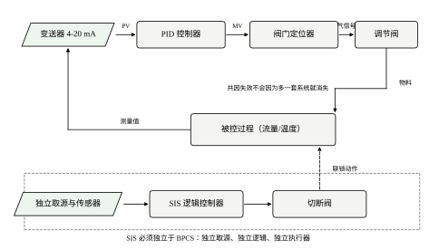
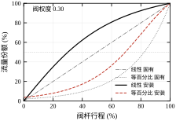
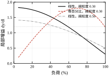
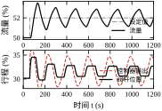
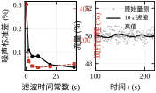
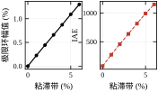
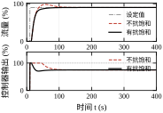
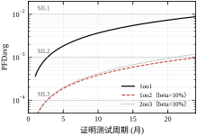
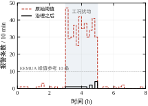

第一个故事关于一只选大了的阀。某装置的流量回路在满负荷时调得很稳，到了夜间低负荷却开始周期性摆动，周期三十秒左右。操作员把控制器增益一降再降，摆幅是小了，响应却变得迟钝。检修时核对铭牌才发现，这只阀是按最大流量的 1.5 倍选的，正常工况只开 20%。阀没有坏，参数也没有填错，错在选型时只看了“能不能通过最大流量”，没有看“常用流量下的增益有多大”。
第二个故事关于噪声。同一只阀，阀杆在一天里走了几万个小步，定位器发烫，填料两个月就漏。查记录发现变送器的量测噪声有 0.3%，控制器为了把这 0.3% 压下去，每一拍都在微调阀位。加了一个 5 秒的一阶滤波之后，阀杆行程降到原来的十二分之一，流量精度几乎没变。教训是：噪声不是靠控制器压的，是靠量程设计与滤波处理的。
第三个故事关于报警。某班八小时里，操作站收到四百多条报警，峰值十分钟四十七条。操作员后来干脆把声音关了，只看画面。真正的那条“冷却水压力低”淹没在四十多条“温度高”里，没有人看见。事后统计，这四百多条里有三百多条来自十二个抖动测点，它们每一分钟都在越限与恢复之间来回。
三个故事对应本章的三块内容：阀门与执行器、变送器与噪声、安全仪表与报警管理。它们都不是控制理论的难点，却是现场九成麻烦的来源。
一个再普通不过的流量回路，物理上由五段组成：检测元件把流量变成差压，变送器把差压变成 4–20 mA，控制器把偏差算成输出，定位器把输出变成气压，阀把气压变成开度，开度再通过管道阻力变成流量。每一段都有自己的非线性、死区、滞后与噪声，图 111-1 把它们画在一起。

图的下半部分是安全仪表系统。它与基本控制系统的关系必须是“独立”：独立取源、独立逻辑、独立执行器。本章会把这条要求量化成 PFD，也会说明为什么两套系统共用一支热电偶时，冗余带来的好处会大打折扣。
控制理论通常假设对象是线性的、量测是准确的、执行器是理想的。工程问题恰恰全部出在这些假设不成立的地方。
第一个差别是工作点。理论给的是一个大信号下的闭环性能，现场关心的是“常用负荷下这一点的增益”。同一个回路在 90% 与 20% 负荷下的开环增益可以差三倍，控制器却只有一套参数。
第二个差别是元件特性。阀的流量特性、定位器的死区、变送器的量程与分辨率、管道的取压位置，这些东西不进微分方程，却决定了回路能不能稳住。本章会把它们写成可计算的量，而不是停在“注意选型”这种话上。
第三个差别是人的因素。报警、联锁、旁路、交接班记录，属于管理与规程，却直接影响安全。一个设计良好的联锁如果每周被旁路三次，它的实际安全等级远低于设计值。
第一，同样的控制器参数，为什么在低负荷会振荡？阀门特性在其中起什么作用，选型时该看哪个数？
第二，阀门粘滞为什么会产生等幅振荡，幅值与粘滞带是什么关系，能不能从曲线上认出来？
第三，变送器噪声多大需要滤波，滤波时间常数怎么定，为什么“滤得越狠越好”是错的？
第四，执行器饱和时控制器在做什么，抗饱和为什么必须做，不做要付出什么代价？
第五，SIS 的冗余为什么常常“看起来很美”，报警泛滥怎么治理，治理到什么程度算合格？
为避免泛泛而谈，本章用一个具体的回路贯穿：一台离心泵把物料送进反应釜，管路上有一只气动调节阀，用孔板流量计测量，控制器是 PI。参数取常见值：过程时间常数 10 s，纯滞后 4 s，阀的时间常数 2 s，阀权度 0.30，等百分比阀的可调比 50。粘滞演示改用温度回路，因为温度回路的过程时间常数大，粘滞引起的极限环更明显。
安全仪表部分不建动态模型，直接用简化的 PFD 公式做架构比较；报警部分用 24 个测点、8 小时的班次数据，含一次持续两小时的工况扰动。所有数字由 code/ch111_sim.py 产生，随机种子固定，读者可以逐位复现。
l 是阀杆行程，归一化到 0 至 1；f(l) 是固有流量特性；y 是实际流量份额，归一化到 0 至 1；\alpha 是阀权度，即满流时阀上压降占系统总压降的比例；g=\mathrm{d}y/\mathrm{d}l 是局部增益；S 是粘滞带宽度，用行程的百分数表示；\tau_f 是量测滤波时间常数；K_c、T_i 是控制器增益与积分时间；\lambda_{du} 是危险未检出失效率；\beta 是共因失效因子；T_1 是证明测试周期。
单位上有一个约定要提前说：本章的流量、行程、份额一类量，数值上都用百分数，但公式里用 0 至 1 的小数。表格与正文引用时注明单位，公式内不写百分号，避免出现“y=50”这种混淆。
本章讨论的现象分布在三条时间尺度上，混在一起看就会误判。
第一条是秒级：量测噪声、阀杆微动、采样与滤波、饱和恢复。周期在 0.1 s 至 10 s，要靠 0.5 s 或 1 s 的趋势曲线才看得见。第二条是分钟级：阶跃响应、极限环、扰动恢复、报警抖动。周期在 1 min 至 10 min，1 s 的趋势太长看不清，历史库的 1 min 均值正合适。第三条是月级：粘滞变宽、填料磨损、换热器结垢、变送器漂移、SIL 的证明测试。要靠月报与季度试验，单看任何一段曲线都看不出来。
观测窗口要按现象选，这条规则可以写成两个数：要看周期为 T 的现象，数据窗口至少 10T，采样间隔至多 T/10。极限环周期 195 s，窗口要 30 min 以上，采样 20 s 就够；阀杆抖动是秒级现象，窗口 10 min，采样必须是 1 s 以下。
按这条规则，本章的两个结论才站得住。粘滞的极限环周期 195 s，用 1 min 存储的历史数据完全能复现，不需要高速采集；而阀杆行程的统计必须用 0.5 s 的数据，用 1 min 均值会把往复运动全部平均掉，行程算出来接近零。同一台阀，两种窗口给出两个相反的结论。
现场最常见的误判就出在这里。操作员盯着 1 s 趋势，看到的是噪声，以为阀坏了；工程师看月报的平均值，看不到 3 分钟的极限环，以为一切正常。两边都没错，只是窗口不对。
调节阀的流量由三件事决定：阀的开度、阀两端的压降、介质的密度。写成常见的工程形式是
q=C_v f(l)\sqrt{\frac{\Delta p}{\rho}} \tag{111-1}
其中 C_v 是流量系数，f(l) 是固有流量特性，\Delta p 是阀上压降。C_v 在选型时定，f(l) 在订货时选，\Delta p 由管路决定。三者之中，只有 \Delta p 会随工况变化，而它恰恰是大多数选型计算里被当成常数的那个。
管路的总压降由泵提供，分成阀上压降与管道压降两部分。流量越大，管道压降越大，留给阀的就越少。用阀权度 \alpha 表示满流时阀上压降占总压降的比例，可以推出流量份额与固有特性之间的关系：
y=\frac{f}{\sqrt{\alpha+(1-\alpha)f^{2}}} \tag{111-2}
式 (111-2) 就是安装特性。\alpha=1 时它退化为固有特性，说明阀拿走了全部压降；\alpha 越小，曲线被压得越弯。工业上通常要求 \alpha 不低于 0.3，低于这个值时阀的特性几乎被管道“吃掉”了。
图 111-2 画了四条曲线。两条细线是固有特性，两条粗线是 \alpha=0.30 时的安装特性。可以看到，线性阀的安装特性被拉成了上凸形，低行程时流量上升很快；等百分比阀的安装特性则接近一条 S 形，中段最陡。

等百分比阀的固有特性是
f(l)=R^{\,l-1} \tag{111-3}
R 是可调比，常见 30 至 50。取 R=50 时，行程 50% 处的流量只有满流的 14%，行程 80% 处才有 46%。这个“低开度流量很小”的特点，正是它能补偿管道压降损失的原因：低负荷时阀开得小，流量被压得住；高负荷时阀开得大，补偿了压降不足。
选型真正该看的是局部增益，也就是单位行程变化引起多少流量变化：
g(l)=\frac{\mathrm{d}y}{\mathrm{d}l} =\frac{\alpha f'(l)}{\left[\alpha+(1-\alpha)f^{2}\right]^{3/2}} \tag{111-4}
对线性阀 f'=1，对等百分比阀 f'=f\ln R。g 的大小直接乘进回路增益：如果过程的稳态增益是 K_p，控制器的比例增益是 K_c，那么该工作点上的开环增益是
L=K_cK_p\,g(l) \tag{111-5}
式 (111-5) 解释了三件事。第一，控制器参数是按某个工作点整定的，K_c 定下来之后，L 就随 g(l) 漂。第二，如果 g 在常用负荷区间变化三倍，那么回路在低负荷处可能已经接近不稳定，而高负荷处却显得迟钝。第三，改阀的固有特性或提高阀权度，等价于改 g(l) 的形状，也等价于改回路增益的分布。
表 111-1 给出本章对象的具体数值。线性阀从满负荷到 10% 负荷，局部增益从 0.300 涨到 1.807，跨 6.0 倍；等百分比阀的增益峰值出现在 75% 负荷（1.779），10% 负荷只有 0.388，跨 4.6 倍。两者都不平，只是“不平的位置”不同。
表 111-1 两种固有特性在不同负荷下的行程与局部增益（\alpha=0.30，R=50）
| 负荷 (%) | 线性阀行程 (%) | 线性阀增益 | 等百分比行程 (%) | 等百分比增益 |
|---|---|---|---|---|
| 100 | 100.0 | 0.300 | 100.0 | 1.174 |
| 75 | 52.8 | 0.862 | 83.7 | 1.779 |
| 50 | 30.2 | 1.368 | 69.4 | 1.614 |
| 25 | 14.0 | 1.707 | 49.7 | 0.935 |
| 10 | 5.5 | 1.807 | 25.8 | 0.388 |

图 111-3 把表 111-1 画成了连续曲线，并加了一条 \alpha=0.50 的线性阀作对照。三条线放在一起，选型的判断就清楚了：如果装置长期在 70% 以上运行，等百分比的增益反而偏高；如果长期在 20% 至 50% 之间，线性阀的低负荷增益太大；把阀权度从 0.30 提到 0.50，线性阀的增益比从 3.47 降到 2.16，曲线明显变平。
这一段的结论与教科书常见的说法不完全一致。教科书写“线性阀配低阀权度会在低负荷振荡，应选等百分比”，这句话成立的前提是负荷范围窄、且工作在低端。本章的算例覆盖 10% 至 100%，此时等百分比在中间负荷的增益最大，反而更容易在中负荷出现超调。正确的判断依据不是“选哪种特性”，而是“常用负荷区间内 g 的最大最小值之比是多少”。
阀门粘滞是阀杆“该动而不动”的现象。定位器给出指令，阀杆被填料摩擦卡住，直到指令与当前位置的差超过某个阈值才突然滑动。工程上用粘滞带 S 描述这个阈值，模型写成
x_k=\begin{cases} x_{k-1}, & |u_k-x_{k-1}|\le S/2\\ u_k-\mathrm{sgn}(u_k-x_{k-1})\,S/2, & |u_k-x_{k-1}|>S/2 \end{cases} \tag{111-6}
其中 u 是控制器输出，x 是阀杆位置，都用行程的百分数。式 (111-6) 的第一行是“粘住”，第二行是“滑动”，滑动的结果是阀杆始终落后指令半个粘滞带。
粘滞与回差常常被混为一谈，两者有区别。回差是“上行与下行走的不是同一条路”，静态；粘滞是“动起来之前要克服静摩擦”，动态。现场更常见的是两者的组合：阀杆先要克服 S/2 才启动，启动之后又沿着一条与返回路径偏移的轨迹走。式 (111-6) 只保留粘滞，已经足以再现极限环。
粘滞引起的振荡有很明显的特征：阀位走阶梯，流量跟着阶梯摆动，振荡周期由积分时间与过程时间常数决定，幅值与 S 近似成正比。本章实测的拟合关系是
A\approx0.22\,S \tag{111-7}
A 是流量波动的半幅（%），S 是粘滞带（% 行程）。S=4 时实测幅值 0.872%，式 (111-7) 给 0.88，吻合。这个关系可以用来反推：看到 0.5% 的等幅波动，先怀疑 2% 左右的粘滞，而不是去调控制器。

图 111-4 是 S=4 时的记录。上图的流量在设定值两侧做等幅摆动，下图更能说明问题：控制器输出是一条斜线，阀位是一条阶梯，两者之间的差始终不超过半个粘滞带。这条“斜线追阶梯”的图形是识别粘滞的直接证据，比看流量曲线可靠得多。
变送器的输出不是真值，而是真值叠加噪声再量化。噪声来自传感器与电子线路，量化来自模数转换。数字系统的分辨率是
\Delta=\frac{\text{量程}}{2^{N}} \tag{111-8}
N 是有效位数。100% 量程、12 位时 \Delta=0.024\%，16 位时 \Delta=0.0015\%。本章的量测噪声标准差取 0.30%，是 12 位分辨率的 12 倍，此时量化可以忽略；如果噪声只有 0.01%，量化就成了主要误差，表现是输出“一跳一跳”，差分算出来的变化率全是台阶。
抑制噪声最常用的手段是一阶滤波：
x_{f,k}=x_{f,k-1}+\frac{\Delta t}{\tau_f+\Delta t}\left(p_{m,k}-x_{f,k-1}\right) \tag{111-9}
\tau_f 是滤波时间常数，p_m 是量测值。对白噪声，滤波后的标准差近似为
\sigma_f\approx\sigma\sqrt{\frac{\Delta t}{2\tau_f+\Delta t}} \tag{111-10}
式 (111-10) 说明噪声按 1/\sqrt{\tau_f} 下降，而滤波引入的相位滞后是 \arctan(\omega\tau_f)，在回路穿越频率处按 \tau_f 线性增长。一个按平方根下降，一个按一次方增长，所以必然存在一个最优点，不存在“滤得越狠越好”。这一点在 §111.3.2 用实测数据展开。
PI 控制器的位置式是
u_k=u_b+K_ce_k+\frac{K_c}{T_i}\sum_{j\le k}e_j\,\Delta t \tag{111-11}
u_b 是偏置。当 u_k 落到阀位上下限之外时，实际输出被截断，但积分项还在继续累加，这就是积分饱和。饱和期间误差一直同号，积分项可以长到正常值的几十倍；等误差反号，积分要先把这笔“债”还完，输出才会退回来，表现是巨大的超调与很长的恢复时间。
条件积分是最简单的抗饱和：
u_k=\mathrm{sat}\left(u_b+K_ce_k+\frac{K_c}{T_i}I_k\right),\qquad I_{k+1}=\begin{cases} I_k+e_k\Delta t, & u_k\ \text{未饱和}\\ I_k, & u_k\ \text{已饱和} \end{cases} \tag{111-12}
也就是“输出顶到限幅就不积分”。还有别的做法，比如反算抗饱和（把饱和前后的差反馈回积分器）、积分限幅，效果相近。本章用条件积分，因为它不引入额外参数，便于比较。
安全仪表系统的可靠性用平均要求时失效概率 PFD 衡量。对危险未检出失效率 \lambda_{du}、证明测试周期 T_1 的单通道系统，
\mathrm{PFD}_{1oo1}=\frac{\lambda_{du}T_1}{2} \tag{111-13}
冗余通道把 PFD 按平方降低，但共因失效（同一批仪表、同一套接线、同一次雷击）会把它们重新拉高。用共因因子 \beta 描述这部分，常用的简化式是
\mathrm{PFD}_{1oo2}=\frac{(\lambda_{du}T_1)^{2}}{3}+\frac{\beta\lambda_{du}T_1}{2},\qquad \mathrm{PFD}_{2oo3}=(\lambda_{du}T_1)^{2}+\frac{\beta\lambda_{du}T_1}{2} \tag{111-14}
两式的第二项就是共因项。当 \beta=0.10 时，第二项往往比第一项大一个数量级，冗余的收益被它封了顶。这不是公式的缺陷，而是现场的常态：两支热电偶装在同一根保护套管里，一个套管结焦，两支一起失效。
SIL 等级按 PFD 的区间划分：10^{-2} 至 10^{-1} 为 SIL1，10^{-3} 至 10^{-2} 为 SIL2，10^{-4} 至 10^{-3} 为 SIL3，10^{-5} 至 10^{-4} 为 SIL4。本章不讨论 SIL4，工业过程里极少用到，且对冗余与诊断的要求远超出简化公式的适用范围。
第一，阀的流量特性用稳态式 (111-2)，不建阀内流场的动态。对流量回路足够，对快速切断工况不够。
第二，过程用一阶加纯滞后，粘滞演示时把时间常数放大到 60 s。真实换热器、反应釜的阶次更高，极限环的形状会更复杂，但“幅值随粘滞带增大”的结论不变。
第三，PFD 用简化公式，不考虑诊断覆盖率、修复时间、表决器的自身失效。这些在完整的 SIL 验证里都要算，本章只在 §111.7.5 提一句，把重点放在“共因失效封顶”这一条上。
报警治理的三条规则之所以有效，可以用一个统计模型说清。设某个测点的量测是平稳的随机序列，噪声满足一阶自回归 x_k=\varphi x_{k-1}+\sqrt{1-\varphi^{2}}\,w_k，其中 w_k 是标准正态白噪声，\varphi 是相邻两拍的相关系数，与相关时间 \tau_c 的关系是 \varphi=\mathrm{e}^{-\Delta t/\tau_c}。本章取 \tau_c=30 s、扫描周期 1 s，得 \varphi=0.967。这个数说明相邻两拍的量测有 97% 是同一件事，噪声不是“每拍独立”的。
先看阈值。报警设定值是基线加 3.0，噪声标准差 0.8，折合 3.75 个标准差。单个样本越限的概率是 8.8\times10^{-5}。若样本真的独立，一天 86400 个样本会有 7.6 次越限，24 个测点合计 182 次，一个班次约 61 次，平均到每个测点 2.5 次。
再看条数。一次越限不会只报一条：在 1 s 扫描、无延时的组态下，越限期间每一拍都算一条。相关时间 30 s 意味着一次越限平均持续十几秒，也就是十几条。2.5 次乘十几条，得到每个测点每班二三十条，与实测的 18.2 条同量级。
这个模型解释了两件事。第一，抖动是“成串”的，不是零散的，因为相关时间把一次越限拉成了十几秒。第二，死区的作用比延时更根本：死区 2.0 把恢复阈值从基线上 3.0 拉到上 1.0，也就是从 3.75 个标准差降到 1.25 个标准差。越限之后要跌这么多才算恢复，噪声很难在短时间内来回穿越，一次事件就只记一条。
on-delay 与死区是互补的。死区管“恢复”，on-delay 管“成立”：持续 10 s 才成立，等于要求越限时间超过相关时间的三分之一，把那些一闪而过的尖峰滤掉。两者叠加，再加上同组抑制，才有了 436 条到 14 条的降幅。
模型也给出一条边界：相关时间越长，同样的死区与延时越不够用。若噪声的相关时间从 30 s 变成 5 min（比如测点装在有大惯性的设备上），10 s 的 on-delay 就形同虚设，必须按 \tau_c 重新定。
定位器的分辨率与变送器的分辨率不是一回事，但它们对回路的影响可以用同一套算法估算。
量化误差的标准差等于量化台阶的 1/\sqrt{12}，也就是台阶的 0.29 倍。定位器分辨率 1% 时，量化误差 0.29%；0.1% 时，0.029%。本章的噪声标准差是 0.30%，与 1% 分辨率的量化误差几乎相等。这不是巧合，而是本章算例里“波动 0.6%”的根源：两种误差量级相当，叠加之后谁也压不住谁。
由此得出一条判据：执行器与量测的分辨率都应小于噪声标准差的 1/3。噪声 0.30% 时，分辨率要做到 0.1% 以下；做到 0.1% 之后，量化就不再是瓶颈，剩下的波动全部来自噪声，可以用滤波处理。
A/D 转换的位数可以按同一口径换算。12 位覆盖满量程时，最小刻度是 0.024%，量化误差 0.007%，远小于 0.1% 的定位器分辨率，不是瓶颈；10 位时最小刻度 0.098%，与 0.1% 同量级，就开始有影响了。所以选卡件时，12 位够用，不必追求 16 位，除非量程被压得很窄。
量程被压窄是另一个陷阱。同样 12 位，量程从 100% 压到 20%，最小刻度就从 0.024% 变成 0.12%，量化误差翻五倍。有些装置为了“提高精度”把变送器量程压得很窄，结果一超量程就丢数，反而更糟。
三个数摆在一起看：噪声 0.30%、定位器 0.1%、A/D 0.024%，从大到小正好差一个量级，这是健康的配置。如果三个数都在 0.2% 至 0.3%，说明整条链上没有哪一环是干净的，此时再调控制器参数没有意义。
阀的可调比要与流量计的量程比对得上，否则阀能调的范围，表读不出来。
孔板差压式的量程比通常只有 3:1 至 4:1，这是由平方关系决定的。流量与差压的平方根成正比，流量降到 20% 时，差压只剩满量程的 4%。变送器若有 0.1% 量程的误差，折算到流量就是 0.5\times0.1/4=1.25\%，误差被放大了十二倍。所以孔板在低流量段的读数不可信，不是表坏了，是原理决定的。
涡街的量程比好一些，10:1 至 20:1，但它要求流速高于一个下限，低于下限不产生稳定涡列，读数直接掉到零。这一点与阀的低开度段正好冲突：阀开度 10% 时流量可能刚好在涡街的下限附近，读数时有时无。
科氏质量流量计的量程比可以到 100:1，直接测质量流量，不受温度压力影响，压损也小。代价是价格与重量，大口径的科氏表又贵又重，安装还要考虑支撑。
选型的判据是“工艺要求的调节比”。要求 3:1 以内，孔板够用且便宜；要求 10:1，选涡街；要求 20:1 以上，或者需要质量流量，选科氏。三者的量程比如果小于阀的实际可调比，阀调得下去、表读不出来，回路的低负荷段等于盲区。
本章的算例假定流量计的量程比足够，才能把 20% 负荷的振荡归因于阀。真实装置上做同样的判断之前，要先确认表在 20% 流量处的读数可信。
把工程问题拆成可执行的动作，本章用六步：定工艺范围、算阀的流量系数与阀权度、选特性与失效位置、定变送器量程与滤波、定联锁与报警的分级、写验收指标。六步按顺序做，前一步的输出是后一步的输入，不能跳。
第一步，定工艺范围。要写清楚最大、正常、最小三个流量，以及各自的温度、压力、密度。很多选型错误源于只给了最大流量，没给正常流量，于是阀按最大值选，正常工况开度只有 20%。
第二步，算 C_v 与阀权度。C_v 按最大流量算并留 10% 至 20% 余量；阀权度按管路压降分配算，目标是 0.3 以上。余量与阀权度是矛盾的：余量越大，正常开度越小，阀权度越差。折中的办法是选两台并联阀，或者选可调比更大的阀。
第三步，选特性与失效位置。特性按 §111.2.2 的增益比判据选，不按习惯选。失效位置指气开还是气关：气开阀失气关闭，气关阀失气打开。这个选择由工艺安全决定，与控制器无关，一旦定错，联锁逻辑再正确也没用。
第四步，定变送器量程与滤波。量程要覆盖工艺可能出现的最大值，但也不能太宽，否则分辨率不够。滤波时间常数按 §111.3.3 的方法定，目标是“阀杆不因噪声频繁动作”，而不是“读数好看”。
第五步，定联锁与报警的分级。哪些参数进 SIS、哪些只进报警、哪些只做记录，要按风险定，不能按“重要不重要”这种模糊判断定。分级的结果直接决定 SIL 目标与报警治理的工作量。
第六步，写验收指标。至少包括：常用负荷下的超调与调节时间、阀杆日行程、报警率、SIS 的 PFD 与证明测试周期。指标要能被第三方复核，所以每条都要写清测试工况与统计口径。
选阀最容易犯的错是“按管径选阀”。管径由流速定，阀的口径由 C_v 定，两者常常不等。按管径选，结果是阀常年在小开度运行，特性被压得极弯，低负荷增益大得离谱。
正确的顺序是先算 C_v，再查样本选口径，再核阀权度与开度。核开度时看三个点：最大流量时开度不超过 90%，正常流量时开度在 40% 至 70%，最小流量时开度不低于 10%。三个点都落在区间内，才算选对了口径。
可调比 R 是第二个要看的数。样本上的 R 是理想条件下的值，实际可调比受阀权度限制，近似为 R_{eff}\approx R\sqrt{\alpha}。R=50、\alpha=0.3 时实际可调比只有 27。如果工艺要求 50:1 的调节范围，这只阀根本做不到，必须换小口径或改双阀。
第三个要看的数是失效位置。气开与气关的选择要问一句“失气时哪种状态更安全”。对进料阀，失气关断通常安全；对冷却水阀，失气打开通常安全。这个问题必须在采购前问清楚，因为气开气关是阀体与执行机构的装配方向，现场改不了。
第四个是噪声与空化。液体阀在压降大时会出现闪蒸与空化，气体阀在高速时会出现啸叫。这两件事不改变控制性能，但会在几个月内把阀芯啃坏。选型时要核算压降比与出口流速，必要时选多级降压阀芯。
变送器的三个参数是量程、精度、响应时间。量程按工艺最大值的 1.2 至 1.5 倍取，精度按控制要求取，响应时间要小于过程时间常数的十分之一。三者里最容易被忽略的是响应时间：一台响应 2 s 的变送器接在时间常数 5 s 的回路里，等于凭空加了 2 s 纯滞后，相位裕度会掉十几度。
滤波时间常数不能拍。定它的依据是“噪声引起的阀杆行程”与“滤波引入的相位滞后”这两件事的平衡。本章把 \tau_f 从 0 扫到 40 s，实测结果在表 111-2。
表 111-2 一阶滤波的噪声、阀杆行程与 IAE（噪声 0.30%，阶跃 5%）
| \tau_f (s) | 滤波后噪声 (%) | 阀杆行程 (%) | IAE |
|---|---|---|---|
| 0 | 0.302 | 427.2 | 39.02 |
| 2 | 0.110 | 65.2 | 51.17 |
| 5 | 0.083 | 34.5 | 96.11 |
| 10 | 0.085 | 26.1 | 152.68 |
| 20 | 0.048 | 30.6 | 385.77 |
| 40 | 0.037 | 48.4 | 975.65 |
表里最值得注意的是第三列与第四列的方向相反。滤波从 0 加到 2 s，噪声降到三分之一，阀杆行程降到七分之一，IAE 只涨了三成，这是明显划算的。从 2 s 加到 5 s，噪声只再降 25%，阀杆行程再降一半，IAE 却接近翻倍。从 5 s 往后再加，噪声几乎不动，IAE 成倍上升。
所以本章取 \tau_f=5 s。这个位置是“阀杆行程已经降到位、IAE 还没开始恶化”的拐点。10 s 那一行噪声 0.085 反而比 5 s 的 0.083 略高，是有限样本的抽样波动，不代表滤波变差；这也提醒我们，用一段 200 s 的数据估噪声，本身有 5% 量级的不确定度。

图 111-5 左图把噪声与阀杆行程画在同一张图上，两条曲线的交叉区就是可用区间；右图是同一段量测在滤波前后的对比，灰点是原始量测，黑线是 10 s 滤波，点划线是真值。滤波后的线明显更平滑，但相对真值的滞后也能看出来，大约落后 10 s。
还有一条经验：滤波器要放在控制器之前，不要放在阀门之后。放在阀后等于给执行器加滞后，回路相位裕度损失更大；放在控制器之前，滤波的是量测，控制器看到的仍然是“当前”的偏差，只是这个偏差被平滑了。
SIS 的设计从风险分析开始，不从仪表选型开始。先定每个安全功能的 SIL 目标，再选架构，再算 PFD，最后定证明测试周期。顺序颠倒的典型后果是“先买了一堆冗余仪表，再回头论证它够不够”，论证往往变成凑数。
第一步，列安全功能。每个功能写清“什么条件触发、触发后做什么、做到什么程度”。比如“反应温度高于 95 摄氏度时切断进料并打开冷却水”，三个要素缺一不可。
第二步，定 SIL 目标。目标由风险矩阵或 LOPA 给出，不由仪表专业自定。本章不展开风险分析方法，只强调一点：SIL 目标是“功能的”，不是“回路的”，同一个回路里的不同功能可以有不同目标。
第三步，选架构。1oo1 最简单，1oo2 抗单点故障，2oo3 兼顾可用性与安全性。选架构时要同时看 PFD 与误停车率，后者决定装置能不能开得起来。
第四步，算 PFD。用式 (111-13)、式 (111-14) 估算，重点看共因项占多少。如果共因项占九成以上，再加一个通道几乎没有意义，应该改共因对策：分电缆、分接线箱、分电源、分取源。
第五步，定证明测试周期。T_1 越长，PFD 越大，测试成本越低。工程上取 6 个月到 1 年，同时把测试覆盖率写清楚：只测传感器不测执行器，等于只测了一半。
报警按后果分三级：安全级、生产级、诊断级。安全级进 SIS 或独立报警，必须带声音与记录；生产级进操作站，允许确认后消音；诊断级只进日志，不上画面。分级的依据是“如果这条报警被忽略，最坏后果是什么”。
分级之后要做 Rationalization，也就是逐条论证“这条报警有没有用”。论证的四问是：它能指导动作吗？它的设定值有依据吗？它的延时合理吗？它和别的报警重复吗？四问有一个答不上来，就删掉或降级。
本章的报警治理用了三条规则：死区从 0.5 加到 2.0、持续 10 s 才成立、同组 120 s 内只报第一条。三条都不需要新增仪表，只改组态。实测效果在 §111.10.4 给出，总量从 436 条降到 14 条。
阀的验收看三项：常用负荷下的阶跃超调、阀杆日行程、全行程动作时间。超调按 §111.6 的方法测；阀杆日行程从定位器或 DCS 的历史曲线积分得到，正常应小于满行程的 100 倍；全行程动作时间要实测，不能只看样本。
阀杆日行程那 100 倍是按填料与定位器的寿命折出来的经验值，不是控制指标。温度回路噪声小、阀位稳定，可以严到 10 倍；流量回路噪声大，100 倍是常见水平。超过这个量级，先查滤波与分辨率，再查阀。
变送器的验收看两项：零点与量程的校验误差、噪声标准差。噪声要在工艺稳定时测，取 10 分钟数据算标准差，超过量程的 0.5% 就要查屏蔽与接地。
SIS 的验收看三项：PFD 计算书、证明测试记录、旁路记录。旁路记录最能说明问题：一年旁路超过 30 天，实际 SIL 就要打折扣。
报警的验收看四项：日均报警数、峰值十分钟报警数、抖动报警占比、长期未确认报警数。四项都做成月报，比一次性的验收更能反映真实状态。
选阀时常把注意力全放在阀体与特性上，忘了执行机构能不能推得动。推不动与粘滞在现场表现很像：指令变了，阀不走。区别在于前者只在高压差时出现，后者在小信号时也出现。
先算不平衡力。单座阀的阀芯承受的轴向力近似为 F=\Delta p\,A，A 是阀芯的受压面积。DN80 的阀芯面积约 50 cm²，压差 1.0 MPa 时 F\approx5.0 kN。压差如果到 2.5 MPa，力就是 12.6 kN。
再算推力。气动薄膜执行机构的推力是气源压力乘膜片有效面积，减去弹簧反力。气源 0.5 MPa、膜片有效面积 400 cm² 时，理论推力 20 kN，扣掉弹簧反力后有效推力约 60%，即 12 kN。配 5 kN 的不平衡力，余量 2.4 倍，够用；配 12.6 kN 的不平衡力，余量不到 1 倍，阀在高压差工况就推不动。
这条核算要在选型阶段做，而且要用最大压差，不是正常压差。最大压差往往出现在开工、切泵、下游切断阀关闭等瞬态，恰好是联锁最需要阀动作的时候。
气源侧有三个常见问题。第一，管径。定位器到执行机构的管子如果细而长，充气时间变长，行程时间跟着变长；现场常见 6 mm 管拉十几米，行程时间比铭牌值慢一倍。第二，过滤减压阀堵塞，气源压力看着正常，流量一上来就掉。第三，定位器本身的耗气量，大膜头配小定位器，动作时气压塌陷。
行程时间的验收标准是“小于过程时间常数的五分之一”。本章 \tau_p=10 s，阀的时间常数 2 s，满足；温度回路 \tau_p=60 s，行程时间 5 s 也满足。反过来说，行程时间不是越短越好：太快会产生水锤与压力冲击，流量回路的阀一般控制在 2 s 至 10 s。
最后一个容易忽略的部件是手轮。手轮的作用是失气或定位器故障时能手动操作，但很多装置的手轮常年挂在那里，限位没退出，阀的实际行程被卡在 80%。这类故障的表现是“阀在大开度时不动”，与特性、粘滞都无关，只有到现场看才能发现。
量程、精度、响应时间都是样本上的数，装到现场之后能不能兑现，取决于取压与引压。
取压点的位置有两条硬要求。第一，流量回路要取在调节阀的上游，且距离足够远，否则阀的动作会直接变成差压波动，回路自己激励自己。第二，取压点要避开弯头、三通与变径，前后的直管段按表的类型取，孔板一般要前 10 倍管径、后 5 倍管径。
引压管的敷设有三条经验。液体介质要向下坡向变送器，坡度不小于 1:12，避免存气；气体介质要向上坡，避免存液；蒸汽要加冷凝罐，让引压管里始终是冷凝水。三条都不满足时，差压里会混进一个不稳定的液柱或气柱，表现为零点缓慢漂移。
堵塞是最常见的故障。引压管堵了，差压变小，流量指示偏小，控制器就把阀往大开。这类故障的可怕之处在于它看起来“很稳定”：读数平稳、没有噪声、没有越限，只是偏小。唯一的线索是与其他冗余测点或物料平衡对不上。
冬季冻管是堵塞的极端情形。有一类事故是这样发生的：引压管冻住，流量指示掉到零，控制器认为流量不足，把阀开到 100%，实际流量远超设定值，直到下游超压才被发现。防冻的措施是伴热加保温，并且伴热温度要控制，过热会让液体汽化，又变成两相。
最后是三阀组与排污。三阀组的作用是校验时切断工艺、平衡差压，操作顺序错了会把单向过载加到变送器膜片上，造成永久零点偏移。排污要定期做，但排污时要把回路切手动，否则排污瞬间的差压跌落会让控制器误动作。
连续装置的特点是“长期在一个工作点附近，偶尔大幅移动”。一个典型的精馏塔进料回路，白天在 85% 至 95% 之间，夜间降到 50% 至 60%，检修前可能短时压到 30%。这个负荷谱决定了增益变化的范围：按表 111-1 的线性阀，90% 与 10% 的局部增益是 0.520 与 1.807，相差 3.5 倍；按等百分比阀，75% 负荷的增益是 1.779，25% 是 0.935，相差 1.9 倍，到 10% 才降到 0.388。
这就是连续装置与间歇装置的第一个差别：连续装置的负荷变化是缓慢的、可预测的，因此可以用增益调度对付；间歇装置的负荷变化是周期性的、每批重复的，调度反而添乱。
第二个差别是运行时长。连续装置一年运行 8000 小时，阀杆动作次数是间歇装置的数倍，粘滞与填料磨损的累积效应更明显。第三个差别是机会。连续装置很少停车，证明测试只能安排在计划检修，T_1 实际上被检修周期锁定；间歇装置每批之间都有空隙，测试窗口反而宽裕。
对付工作点漂移有两条路：把阀选得让增益平，或者让控制器增益跟着负荷变。第一条是选型问题，第二条是控制问题，工程上常常两条一起用。
增益调度的做法是把负荷（或流量）分成三段，每段一组 K_c、T_i，段间做线性插值。分段的依据是局部增益 g 的变化：g 变化超过 1.5 倍就分一段。按表 111-1，线性阀在 100% 至 50% 之间 g 从 0.300 到 1.368，变化 4.6 倍，至少要分三段。
调度变量必须满足两个条件：能实时测量、与 g 单调相关。流量本身满足；阀位也满足，但阀位是控制器输出，用它做调度会形成代数环，一般不推荐。如果两个条件都不满足，宁可不调度，用一组保守参数，也不要引入一个不可靠的调度。
调度还有一条纪律：每段的参数要在该段内单独验证，不能只在中间段验证。很多项目的调度表是从中间段按比例外推的，低负荷段的参数从来没测过，投用后才发现那一档根本不稳定。
连续运行几个月后，两件事会同时发生：填料磨损让粘滞带变宽，换热器结垢让传热变差。前者影响阀，后者影响对象增益，两者的表现都是“回路变得难调”。
粘滞的演化是渐进的。新阀的粘滞带通常小于 0.5%，运行一年后可能到 2% 至 3%。按式 (111-7)，3% 的粘滞带会产生约 0.66% 的等幅波动。这个幅值在流量回路里也许可以接受，在温度回路里就会变成产品质量的波动。
判断粘滞是否恶化，最直接的办法是看阀位与控制器输出的历史曲线：两条曲线的差如果呈现规则的锯齿，且锯齿高度在增大，就是粘滞在加重。第二种办法是做一次小阶跃试验，看阀位是否“跳”而不是“走”。
结垢的判断要靠传热计算，不属于本章范围，但它对控制的影响要说一句：结垢让对象增益下降，回路变迟钝，操作员会本能地加大控制器增益，等到检修后垢层清除，同一组参数就变得过于激进。所以每次检修后要重新整定，不能沿用修前参数。
间歇装置每批都要经历升温、保温、降温，阀位在大范围内往复，粘滞的表现是“每批开头几拍不动”，而不是持续的极限环。连续装置的阀位长期停在某个小区间，粘滞的表现是“小幅等幅振荡”，更容易被误判为控制器参数问题。
报警的差别也很大。间歇装置的报警集中在批切换与升温段，呈脉冲式；连续装置的报警与负荷、环境温度相关，呈日周期。治理报警时，间歇装置要重点处理“批切换瞬间的连片报警”，连续装置要重点处理“昼夜温差引起的慢漂报警”。
SIS 的差别在于测试窗口。间歇装置可以在两批之间做部分行程测试，连续装置只能等检修。这导致同样的架构、同样的 T_1，间歇装置的实际 PFD 往往更低，因为它有更多机会发现隐性故障。
设一台精馏塔的进料流量回路，白天 90%、夜间 20%，阀为线性、\alpha=0.30、R=50，控制器按 50% 负荷整定为 K_c=1.2、T_i=12 s。按表 111-1，50% 负荷时阀位 30.2%，90% 时约 74.9%，20% 时约 11.1%。
按式 (111-5)，90% 负荷的相对回路增益是 0.520/1.368=0.38，20% 负荷是 1.807/1.368=1.32。也就是说，夜间的回路增益是整定点的一倍三，白天的只有四成。这个比值直接对应闭环表现：本章的阶跃试验里，线性阀在 90% 负荷超调 1.26%，在 20% 负荷超调 17.40%，相差一个数量级。
解决办法有三个层次。最彻底的是把阀换小或提高阀权度，让 g 的跨度从 3.5 倍降到 2 倍以内；中间层次是加增益调度，夜间把 K_c 降到 0.9；最省事的是接受白天的迟钝，因为白天负荷稳定、对快速性要求低。三条路的成本依次降低，效果也依次降低，选哪条取决于夜间的波动是否影响产品质量。
连续装置的实施顺序与间歇不同：先做阀的体检，再做控制器整定，最后做联锁与报警的复核。
阀的体检包括三项：全行程动作时间、粘滞带估计、阀权度核算。前两项现场可测，第三项要查原始设计资料，很多老装置的资料已经不全，只能用一次变负荷试验反推。
控制器整定按常用负荷做，不要按最大负荷做。整定完之后在夜间负荷下复测一次，如果超调超过 10%，就加调度或改参数。这一步不能省，因为夜间往往是无人值守时段，振荡会持续几个小时。
联锁与报警的复核放在最后，因为它依赖前面的结果：阀的实际行程时间决定了联锁的动作时间能否满足，控制器的输出范围决定了报警设定值是否合理。顺序颠倒的话，前面一改，后面的设定全要重做。
整定要有一个基准工作点，这个点不能凭印象选。做法是把一年的流量数据按大小排序，画成持续时间曲线：横轴是一年中超过某流量的时间占比，纵轴是流量。曲线左端是最高流量，右端是最低流量。
曲线给出三个数：P_{95}、P_{50}、P_5，分别对应 5%、50%、95% 的时间占比。若某精馏塔进料回路算得 P_{95}=20\%、P_{50}=55\%、P_5=92\%，整定点应取 55%，而不是 92%。按最大负荷整定是本章反复批评的错误，持续时间曲线正好给出反驳它的依据。
常用区间也应从曲线定，而不是从“设计值”定。取 P_{90} 到 P_{10} 作为常用区间，要求这段区间内局部增益的最大最小比不超过 2。按表 111-1，线性阀在 20% 至 90% 之间是 0.520 至 1.807，比值 3.5，不满足；这时要么换特性，要么加调度。
有一类负荷谱会骗人：双峰谱。白天 90%、夜间 20%，中间几乎没有停留，P_{50} 落在两个峰之间的“无人区”。按 P_{50} 整定，等于按一个从来不出现的工作点整定，两边都不合适。这种情况不能用单点整定，必须两组参数加调度，切换点放在两峰之间的中段。
用历史数据时还要剔除三类时段：停车、开工、以及仪表检修。这三段的流量不代表稳态负荷，混进去会把曲线的形状拉偏。剔除的办法很简单，先按“阀位变化率小于每小时 5%”筛一遍，剩下的才算稳态。
连续装置也有过渡：开工、切牌号、切泵、停车。这段时间里阀位大幅移动、设定值成阶跃、报警集中出现，是回路最容易出事的时候。
第一条策略是过渡期切手动或半自动。开工升温时，工艺参数离正常值很远，控制器按正常工况的参数去追，只会把阀推到极限。手动给固定输出、由人盯着关键参数，比自动更安全。等参数进入正常区间，再按 §111.8.7 的三步投自动。
第二条策略是过渡期的报警单独统计。本章报警数据里第 3 至 5 小时的扰动，本质是一次过渡工况，占用了大量报警条目。如果把这段时间混进月报的日均值，会得出“报警治理没效果”的错误结论，也会掩盖平稳时段的真实问题。做法是在月报里把过渡时段标出来，单独一行。
第三条策略是过渡前做一次抗饱和检查。切牌号时设定值阶跃往往超过 20%，输出会长时间贴限幅；如果抗饱和没做，退饱和后的超调会叠加在工艺波动上，正好撞上产品质量的敏感期。检查的方法很简单：临时把设定值阶跃 20%，看峰值是否超过 105%。
三条策略的共同点是“承认过渡期是特殊的”。控制器的参数、报警的阈值、验收的指标，都是按稳态设计的，用在过渡期上必然不合适。工程上不做特殊处理，就等于默认过渡期的行为可以接受，而事故统计恰恰显示，过渡期的事故率是稳态的数倍。
本章的仿真步长是 0.5 s，现场 DCS 的控制周期通常是 0.5 s 至 1 s，历史库按 1 s 存储。三个周期不是一回事，混用会带来两类误差。
第一类是量化。阀位输出如果是 0.1% 分辨率，阀杆的最小动作就是 0.1% 行程；如果定位器只有 1% 分辨率，最小动作就是 1%。后者相当于给回路加了一个 1% 的死区，按式 (111-7) 会产生约 0.22% 的流量波动。这个波动不是控制器造成的，调参数调不掉。
第二类是采样保持。控制器每个周期读一次量测、算一次输出，输出在下一个周期之前保持不变。这个“零阶保持”引入的等效滞后是半个采样周期，0.5 s 采样时是 0.25 s，相对 4 s 的纯滞后可以忽略；但如果采样周期被拉到 4 s，等效滞后就有 2 s，占纯滞后的一半，相位裕度会明显下降。
判断采样周期是否够快，有一条经验：采样周期应小于过程纯滞后的十分之一，且小于过程时间常数的五分之一。本章对象是 4 s 纯滞后、10 s 时间常数，两个条件给出 0.4 s 与 2 s，取 0.5 s 满足。
报警的 on-delay 有两种实现：按拍数计、按时间计。按拍数计的写法是“连续 10 个扫描周期成立”，按时间计的写法是“连续 10 s 成立”。两者只在扫描周期恰好 1 s 时等价。
现场最容易出问题的地方就在这里。组态时按 1 s 扫描写了 10 拍，后来系统扩容，扫描周期变成 2 s，实际延时就成了 20 s；操作员觉得“报警反应慢”，于是把延时改小，又回到抖动。反过来，如果扫描周期缩到 0.5 s，10 拍只有 5 s，抖动报警又回来了。
本章的做法是用时间戳：记下第一次越限的时刻，每次扫描比较当前时刻与它之差，超过设定值才成立。这样扫描周期怎么变，延时都不变。代价是要多存一个时间戳，实现上多一行代码。
报警的死区也有类似的陷阱。死区是“越限值”与“恢复值”之差，如果两个值都按工程单位存，改量程时忘了一起改，死区就会失真。稳妥的做法是死区按量程的百分数存，显示时再换算。
式 (111-9) 的系数是 \Delta t/(\tau_f+\Delta t)。\tau_f=5 s、\Delta t=0.5 s 时系数是 0.0909，也就是每拍把新量测的 9% 混进当前值。这个系数与采样周期绑定，采样周期一变，滤波效果就变。
举一个真实的错法：系数按 0.5 s 算好写成常数 0.0909，后来这段逻辑被挪到一个 2 s 周期的任务里，等效时间常数变成
\tau_{eff}=\Delta t\frac{1-\beta}{\beta}=2\times\frac{0.909}{0.0909}\approx20\ \mathrm{s} \tag{111-15}
\beta 是滤波系数。原本 5 s 的滤波变成了 20 s，操作员的第一反应是“控制器变迟钝了”，去加大增益，结果噪声又被放大，形成新的振荡。这类问题查起来很费时间，因为代码里那个 0.0909 看上去完全正确。
正确的写法是用时间常数与当前周期实时算系数，或者用带时间戳的一阶滤波。后者更稳，因为即使某一拍任务超时，系数也按实际经过的时间算。
还有一条：滤波初值要用第一个量测，不要用零。用零的话，回路启动后要经过几个时间常数才追上真值，这段时间里控制器看到的是虚假的大偏差，输出会顶到限幅。
智能定位器的阀位反馈常见 0.1% 至 1% 的分辨率，采样周期 0.1 s 至 1 s。用它做粘滞检测时，分辨率直接决定了能测到的最小粘滞带：反馈分辨率 1%，粘滞带小于 1% 就看不出阶梯。
更麻烦的是反馈的量化会“掩盖”真实运动。阀杆在 0.5% 范围内连续移动，反馈值却一直是同一个数，看上去像粘住了；实际是分辨率不够。判断方法是看控制器输出：输出在缓慢爬升而反馈不动，可能是粘滞，也可能是分辨率；再看输出反转之后反馈是否立即跟上，如果立即跟上，就是分辨率问题。
用于控制的阀位反馈还要注意一点：不要把它直接串进控制回路做阀位校正。定位器本身已经是一个闭环，外面再套一个阀位环，两个环的带宽接近时会互相激励。要校正，就校正定位器的零点与量程，而不是在 DCS 里加一个外环。
某装置投用后发现流量波动 0.6%，周期约 3 分钟，操作员怀疑是控制器参数太激进。先把 K_c 从 1.2 降到 0.8，波动幅值降到 0.4%，但响应明显变慢；再把 K_c 降回 1.2，波动又回来了。
第一步排查控制器，排除了参数问题：同样的参数在另一套装置上运行正常。第二步查阀，把阀切到手动，给一个固定输出，流量仍然有 0.5% 的缓慢摆动，说明问题不在控制器。第三步查阀位反馈，发现阀位在 30.0 与 31.0 之间跳变，正好是 1% 的台阶。
结论是定位器分辨率只有 1%，加上阀杆有轻微粘滞，两者叠加形成了 1% 量级的死区。换了一台 0.1% 分辨率的定位器，波动降到 0.1% 以下。整个过程里，控制器的参数从头到尾都是对的，错的是“用调参数去解决执行器分辨率问题”这个思路。
这个案例的可迁移经验是：看到小幅、等幅、周期由积分时间决定的波动，先查阀；看到大幅、衰减、周期由对象决定的波动，先查控制器。两条判据能把排查范围缩小一半。
离散系统还有一个离散理论里没有的问题：数据可能是假的。DCS 给每个点带一个质量位，至少分三档：好、可疑、坏。控制器如果只看数值不看质量位，就会把“坏”当成“真”。
最危险的不是坏值，是冻结值。通信中断后，有的系统保持最后收到的数值不变，量测曲线看上去是一条完美的直线。控制器看到的是“稳定”，偏差为零，输出不动；而工艺可能正在爬温、超压。这类故障在画面上几乎看不出来，因为没有抖动、没有越限，唯一的线索是质量位。
坏值的表现相反，通常是掉到零或满量程。4–20 mA 断线时读数为 0 mA，折合 -25%，一眼就能看出异常。所以模拟量断线反而容易发现，数字量冻结才是隐患。
处理策略要按失效方向定。量测坏了，控制器是“保持最后值”安全，还是“切手动”安全？对加热回路，保持最后值可能让温度继续升，切手动至少能让人接管；对进料回路，保持最后值通常更安全，因为突然切手动会让流量跳到阀的失效位置。这个选择没有通用答案，要逐回路写进设计文件。
超时是第三种情况。通信正常但数据不刷新，超时计时器到期后应当把质量位降级，并触发诊断报警。超时时间不能定得太短，否则网络拥塞时会误报；一般取扫描周期的 3 至 5 倍。
还有一类容易被忽略的错误是量程换算。4 mA 对应 0%、20 mA 对应 100% 是标准，但有些变送器带小信号切除，4.2 mA 以下一律输出 4 mA；有些智能变送器在超量程时输出 20.5 mA 的饱和值。控制器如果按线性换算，就会把饱和值读成 103%，进而做出错误的判断。
质量位、超时、量程换算这三件事都很琐碎，却决定了回路在异常时是“安全地停”还是“自信地错”。本章的所有数字都假定数据是好的；真实系统里，先确认这一条，再谈整定。
第一，所有与时间有关的参数用时间单位存，不用拍数。包括滤波时间常数、报警延时、联锁延时、阀门行程时间。拍数只出现在代码内部，且必须由时间换算得到。
第二，所有与量程有关的参数用百分数存，不用工程单位。包括死区、报警设定值、输出限幅。工程单位只用于画面显示与报表。
第三，所有离散化引入的误差要能估算。量化误差、采样滞后、滤波等效滞后，各写一个数在文档里，调试时对照。三者之和如果超过纯滞后的 20%，就说明这套数字化方案需要重新设计，而不是靠调参数弥补。
第四，所有参与控制的量测都必须带质量位，控制逻辑必须用它。坏值与冻结值的处理方式要逐回路写明：是保持最后值、切手动，还是按失效方向置一个安全值。这一条最容易被当成“编程细节”，实际上它决定了异常时回路是安全地停，还是自信地错。
稳定裕度在工程上不是一个“是或否”，而是“在最不利的那个工作点上还剩多少”。§111.2.2 的式 (111-5) 说明回路增益正比于局部增益，把任意负荷下的回路增益与整定点相除，就得到相对增益：
\frac{L(l)}{L(l_0)}=\frac{g(l)}{g(l_0)} \tag{111-16}
按表 111-1，线性阀在 90%、50%、20% 三个负荷点的局部增益是 0.520、1.368、1.807，以 50% 为基准的相对增益分别是 0.38、1.00、1.32。同一组 K_c=1.2、T_i=12 s，在三个点上的 5% 阶跃响应是超调 1.26%、4.79%、17.40%，IAE 依次为 23.82、33.98、59.48。
这三个数放在一起能看出两件事。第一，相对增益只变了 3.5 倍，超调却变了一个数量级，说明超调对回路增益极其敏感：L 逼近临界值时，闭环阻尼随 L 快速下降，不按线性比例。第二，低负荷是危险侧。50% 负荷的 4.79% 尚可接受，20% 负荷的 17.40% 已经不能算“稳定运行”。
90% 那一档的 1.26% 要打个折扣看。这一档的设定值是 100% 流量，阀位必须开到满行程，控制器想再开也开不上去，超调被输出限幅人为压住了。所以这个数字不能当成“整定得好”的证据，只说明限幅替控制器挡住了超调。判断整定质量要看 50% 这一档。
等百分比阀的表现换了个位置。同样三档，超调是 5.09%、16.76%、3.20%。最差的不是低负荷，而是 50% 负荷：按表 111-1，等百分比阀在 50% 负荷处的局部增益 1.614 最大，到 90% 是 1.174，到 20% 只有 0.935。这推翻了一条常见的经验——等百分比阀并不“全面优于”线性阀，它只是把最坏点从中负荷搬到了别处。
工程上的结论有两条：选特性时不看“平均好不好”，看常用负荷区间内 g 的最大最小比；整定时不按最大负荷整，按最不利的那个点整，或者加调度。
粘滞不是随机扰动，它把回路变成一个非线性振子：阀杆不动时回路近似开环运行，积分器持续累积，直到控制器输出与阀位之差超过粘滞带的一半，阀杆才跳一步。这个过程与 §111.5.4 的分辨率问题是同一类，只是幅值大得多。
把粘滞带 S 从 0 扫到 6%，用 §111.1.5 的温度回路（\tau_p=60 s、\theta=8 s、K_c=2.0、T_i=20 s、2% 阶跃、无量测噪声），结果画在图 111-6。左图是极限环幅值随粘滞带的变化，右图是同一批算例的 IAE。

取 S=0,1,2,4,6 五个代表性点，幅值是 0、0.225%、0.443%、0.872%、1.303%。前四点在图上几乎落在一条直线上，可以用
A\approx0.22S \tag{111-17}
拟合。A 是流量份额的等幅波动幅值，S 是粘滞带占行程的百分数。系数 0.22 不是普适常数，它随控制器增益与对象增益变：K_c 越大，同样的粘滞带对应更大的幅值。这条关系能用的地方是量级判断——粘滞带 2% 时波动约 0.44%，还算能靠产品质量指标盖住；粘滞带 6% 时波动 1.3%，温度回路已经影响合格率。
这组数据里还有两组数值要单独看。IAE 从 75.59 涨到 1149.73，是 15 倍；阀杆行程从 13.2% 涨到 145.6%，是 11 倍。粘滞的代价不只是“波动大”，还包括“阀杆跑得更多”：阀杆每跳一次都是全幅行程，跳得越猛磨损越快，粘滞带又进一步变宽。这是一条正反馈，也是粘滞会在几个月内从“能忍”变成“不能忍”的原因。
周期是另一条线索。五个算例的周期是 195.4、195.9、195.1、196.5 s，跨度 1.4 s，相对离散 0.7%。S 从 1 变到 6，幅值涨了近六倍，周期几乎不动。这个特征是粘滞的指纹：极限环的频率由线性部分的相位决定，粘滞只决定幅值。
用描述函数的语言说，粘滞的等效增益只随幅值变、不随频率变，极限环条件 1+N(A)G(\mathrm{j}\omega)=0 中，频率方程与 A 无关。所以看到“等幅、周期固定、改 K_c 只改幅值不改周期”的振荡，基本可以判定问题在阀；反之，控制器参数引起的振荡，改 K_c 时周期会明显移动。
还要解释一句为什么温度回路比流量回路更容易看见粘滞。流量回路的过程时间常数只有 10 s，积分作用能在一两分钟内把偏差拉回来，极限环来不及长大；温度回路的 \tau_p 是 60 s，阀跳一步，温度要几分钟才响应，于是形成慢周期的大幅摆动。同样的阀，装在温度回路上更容易被投诉。
执行器饱和是稳定性问题里最容易被低估的一种。控制器不知道自己“说的话没人听”，积分器照常累加；等到输出需要退回来时，积分项里已经存了一大笔欠账。这笔欠账要在退饱和后逐拍偿还，表现为长时间的单向偏差，也就是超调。
算例把设定值从 0 阶跃到 90%，阀的量程是 0 至 100%。不给抗饱和时，峰值 98.29%，超调 9.22%，IAE 1463.15，到达 89% 的时刻是 36.5 s。改用条件积分（输出顶到限幅就不累加）之后，峰值 90.00%，超调为零，IAE 1280.88，到达 89% 的时刻是 74.0 s。
四个数的方向不一致，正好说明抗饱和在做什么。峰值从 98.29% 降到 90.00%，IAE 降 12.5%，这是收益；到达 89% 的时刻从 36.5 s 延到 74.0 s，这是代价。原因很直接：不给抗饱和时，攒下的欠账让输出在退饱和后长时间保持高位，PV 冲得快，也冲过头；给了抗饱和，输出按偏差需要退回，PV 上升得慢，但不越界。
所以抗饱和的定位是“不冲过头”，不是“更快”。只看 IAE，12.5% 的改善不算惊艳；但峰值 98.29% 与 90.00% 的差别，在工艺上是“可能触发高高限联锁”与“安全”的差别。评价抗饱和要看峰值，不能看 IAE。

图 111-7 把两条曲线画在一起。上图是 PV 与设定值，下图是控制器输出（已限幅）。下图里能清楚看到无抗饱和那条在 PV 已经过冲之后仍贴着 100% 不动，因为积分项攒下的欠账还没退完；有抗饱和的那条早就离开限幅，跟着偏差往下走。
实现上要注意三条。第一，上下限都要做，只做上限的话，负偏差时同样会积累。第二，手动与自动切换时要把积分项初始化为当前输出，否则切换瞬间有跳变。第三，串级回路的外环也要做：外环的输出是内环的设定值，外环饱和时同样会积分饱和，而且更隐蔽，因为它的输出不直接顶到 0 或 100。
还有一个常被忽略的场合：阀的实际行程受限。控制器输出 0 至 100%，但阀可能因机械限位只能走 0 至 95%，或者因工艺要求被限在 20% 至 80%。这种软限幅如果不告诉控制器，效果与硬限幅一样，抗饱和也必须按软限幅的位置做。
SIS 的“性能”有两个方向：该动的时候要动，是安全性；不该动的时候不要动，是可用性。前者用 PFD 度量，后者用误停车率度量，两者常常冲突。
按式 (111-13)、式 (111-14)，取 \lambda_{du}=10^{-6}/h、\beta=0.10，把证明测试周期从 3 个月拉到 24 个月，三种架构的 PFD 见表 111-3。
表 111-3 三种表决架构的 PFD 与共因项占比（\lambda_{du}=10^{-6}/h，\beta=0.10）
| T_1（月） | 1oo1 | 1oo2 | 2oo3 | 共因项占 1oo2 的比例 |
|---|---|---|---|---|
| 3 | 1.10e-3 | 1.11e-4 | 1.14e-4 | 98.6% |
| 6 | 2.19e-3 | 2.25e-4 | 2.38e-4 | 97.2% |
| 12 | 4.38e-3 | 4.64e-4 | 5.15e-4 | 94.5% |
| 24 | 8.76e-3 | 9.78e-4 | 1.18e-3 | 89.5% |
共因项占比按
\eta=\frac{\beta\lambda_{du}T_1/2}{\mathrm{PFD}_{1oo2}} \tag{111-18}
计算。3 个月时是 98.6%，意味着 1oo2 的 PFD 里只有 1.4% 来自“两个通道独立失效”。这个数说清了一件很硬的事实：这种情况下，把两个通道做成真正独立（分电源、分电缆、分接线箱、分取源）比再加第三个通道有价值得多。
12 个月那一行可以看清冗余的真实收益。1oo1 是 4.38e-3，按 SIL 区间属于 SIL1；1oo2 是 4.64e-4，2oo3 是 5.15e-4，两者都进 SIL3。从 SIL1 跳到 SIL3 是两级，看上去冗余很值。但 1oo2 与 2oo3 之间只差 11%，而两者的独立项差三倍（2.56e-5 对 7.68e-5）——三倍的差别被同一个共因项抹平了。
测试周期的影响也是同样的味道。周期从 3 个月拉到 24 个月，是 8 倍；1oo2 的 PFD 从 1.11e-4 涨到 9.78e-4，是 8.8 倍。如果共因项不存在，独立项应按平方涨 64 倍。所以“缩短测试周期能换来平方级的 PFD 改善”这句话，只在共因项不主导时成立；共因项占九成时，改善是线性的。
可用性那一侧要另算。1oo2 是“任一通道动作就停车”，两个通道的误动作概率相加，误停车率约是 1oo1 的两倍；2oo3 要“两票通过”，单通道误动不停车，误停车率显著低于 1oo1。工程上选 2oo3 的理由通常不是 PFD，而是“这套装置一年只能停两次”。
三条结论：先降 \beta 再谈架构；PFD 达标不等于可以投用，还要看误停车率；证明测试的覆盖率比周期更关键，只测传感器不测执行器，等于把 PFD 算小了一半。
报警系统的“稳定性”是另一个意思：给定平稳工况，报警应该安静；给定真实异常，报警应该出现。抖动就是“平稳工况下反复出现”的那种不稳定。
本章 24 个测点、8 小时班次的数据里，原始组态下总报警 436 条，峰值十分钟 47 条，48 个十分钟时间片里有 12 个超过 10 条，24 个测点里有 12 个属于抖动测点（一个班次内报警 4 条以上）。按三条治理规则重算同一段数据，总量 14 条，峰值 4 条，超 10 条的时间片 0 个，抖动测点 1 个。单个测点平均从 18.2 条/班降到 0.6 条/班。
行业常用的合格线是平均每 10 分钟不超过 1 条、峰值 10 分钟内不超过 10 条。原始数据是 9.1 条与 47 条，两条都远超；治理后是 0.29 条与 4 条，两条都进线。这也解释了 §111.3.6 为什么把“峰值十分钟”单列成一项指标：平均值合格而峰值超标，操作员仍然会被瞬间的报警洪水冲垮。
抖动的成因可以归成三条，与三条规则一一对应。设定值离噪声太近，是死区问题；噪声的相关时间比扫描周期长，是 on-delay 问题；工艺本身在过渡，是抑制窗口问题。三条规则都不需要新硬件，都是组态。
这里要防一种过度治理：把死区加到 5%、延时加到 60 s，报警当然不抖了，但真实异常也被滤掉了。判断标准是“治理后，已知的那次真实异常还能不能报出来”。本章算例里，第 3 至 5 小时的工况扰动仍然触发了 4 条报警，说明治理没有伤到灵敏度。
把前面几节的量放进一张表，每条都写清测试工况，因为脱离工况的数字没有意义。表 111-4 是本章的验收口径。
表 111-4 工程问题的验收指标与本章算例数值
| 指标 | 合格线 | 测试工况 | 本章数值 |
|---|---|---|---|
| 超调 | ≤10% | 常用负荷，5% 阶跃 | 4.79%（50% 负荷）；17.40%（20% 负荷，不合格） |
| IAE | 与整定基线比不劣化 15% | 同上 | 33.98 |
| 阀杆累计行程 | 与整定基线比不劣化 15% | 50% 负荷、5% 阶跃、含 0.30% 噪声（600 s） | 34.5（\tau_f=5 s）；427.2（无滤波），单位 % 满行程 |
| 极限环幅值 | ≤0.5% | 温度回路，2% 阶跃 | 0.225%（S=1\%）；0.872%（S=4\%） |
| 饱和后峰值 | ≤105% 量程 | 0 到 90% 阶跃 | 90.00%（有抗饱和）；98.29%（无） |
| SIS 的 PFD | 达到 SIL 目标 | T_1=12 月 | 4.64e-4（1oo2，SIL3） |
| 报警率 | ≤1 条/10 min，峰值 ≤10 条 | 8 h 班次 | 0.29 条，峰值 4 条 |
表里有两行是“同一件事的两种状态”，值得对照着看。阀杆累计行程的 34.5 与 427.2，差的就是一个 5 s 的滤波；饱和后峰值的 90.00 与 98.29，差的就是一行条件积分。两处改动都不涉及硬件，成本几乎为零，效果却决定设备能不能长期运行。
这里要说清行程的读法。34.5 与 427.2 都是十分钟窗口内的累计变化量，单位是满行程的百分数，不是“一天走几趟”。换算成日均，只需乘 144，得到约 5000 与 61500 个百分点，也就是 50 倍与 615 倍满行程。本章保留这两种写法：前者是脚本直接打印的原始量，后者是现场习惯的日行程，两者只差一个时间缩放，不改变 12.4 倍的结论。
反过来，超调那一行说明有些问题调参数解决不了。20% 负荷的 17.40% 是阀选型造成的，只能靠换阀、加调度，或者接受它。分清“改一行代码能解决的”与“必须改硬件才能解决的”，是本章最想传达的判断力。
现场没有频响分析仪，只有阶跃曲线。但超调与相位裕度之间有一个粗糙而好用的对应，可以把阶跃试验的结果翻译成“还剩多少稳定余量”。
对二阶近似，超调与阻尼比的关系是 M_p=\exp\left(-\pi\zeta/\sqrt{1-\zeta^{2}}\right)，而相位裕度与阻尼比的经验关系是 \mathrm{PM}\approx100\zeta（度）。两式联立，就能从超调反推裕度。
代入本章的数：超调 4.79% 对应 \zeta\approx0.70，相位裕度约 70°；超调 17.40% 对应 \zeta\approx0.49，裕度约 49°；超调 37% 对应 \zeta\approx0.30，裕度约 30°。作为对照，一个设计良好的回路通常要求裕度在 45° 至 60° 之间。
这组数把 §111.6.1 的结论说得更直接：50% 负荷的裕度是 70°，余量充足；20% 负荷的裕度掉到 49°，已经在合格线的边缘。同一个控制器、同一组参数，裕度差 20°，全靠局部增益变化。
有了这个映射，加增益之前可以先算一笔：裕度 70° 时，把 K_c 提到 1.4 倍，裕度大约掉到 45° 至 50°，还能接受；裕度 49° 时再加，就直接进入振荡区。这比“试试看”稳妥得多。
局限要说清。三件事会破坏这个映射：对象是高阶的（不是一阶加纯滞后）、过程有饱和、执行器有粘滞。饱和会把超调截掉，让人误以为裕度很大；粘滞会产生与增益无关的等幅振荡，让人误以为裕度为零。所以这个映射只能用于“没有饱和、没有明显粘滞”的阶跃，且只能当量级估计，误差在 ±10° 量级。
把它当成一把粗尺子，而不是精密仪器。粗尺子的价值在于：它让你在改参数之前就知道会不会出事。
阀权度 \alpha 是本章最“贵”的一个参数。它由管路压降分配决定，一旦管路建成，改它就要改泵、改管径。它的作用是把固有特性拉弯：\alpha=1 时安装特性等于固有特性，\alpha 越小曲线越弯，低行程段的局部增益越大。
按式 (111-4) 算，线性阀在 90% 与 10% 两个负荷点的增益比随 \alpha 的变化是：\alpha=0.2 时 4.73，\alpha=0.3 时 3.47，\alpha=0.5 时 2.16，\alpha=0.7 时 1.51。从 0.3 提到 0.5，增益比降了 38%，这是很实在的收益。
代价在泵上。设满流时管道压降为 P，\alpha=0.3 对应阀上压降 0.43P，系统总压降 1.43P；\alpha=0.5 对应阀上压降 P，总压降 2P。扬程要增加 40%，泵的轴功率也差不多增加这个比例。所以“把阀权度提到 0.5”这句话，在能耗上是有明确价码的，不是白拿的。
可调比 R 的矛盾在另一头。样本上的 R 是理想值，实际可调比近似为 R\sqrt{\alpha}：R=50、\alpha=0.3 时只有 27。若工艺要求 50:1 的调节范围，单靠一只阀做不到，要么提高 \alpha，要么用一大一小两只阀分程。
R 的取值还影响低开度段的形状。R=50 时行程 20% 处的流量只有 4.4%，R=30 时是 6.6%。R 越大，低开度段越“平”，高开度段越“陡”，中段斜率也越大。选 R 时要和常用负荷区间对上：常用负荷落在 20% 至 60% 行程的话，R=50 会让这一段特别陡，反而不如 R=30 平顺。
这三个词在现场经常混用，含义不同。死区是“输入变了、输出不动”的区间，与方向无关；回差是“上行与下行两条曲线不重合”的宽度；粘滞是回差的一种成因，特点是换向时要先走完整个带宽才动。
按 §111.2.3 的模型，粘滞带 S 的后果是“换向时等效死区等于 S”。这意味着粘滞对回路的影响是双向的：小幅往复运动被完全吃掉，大幅运动才跟得上。这也是为什么粘滞在小偏差时表现为“阀不动”、在大偏差时表现为“阀猛跳”。
量纲上要注意两件事。第一，S 用行程的百分数表示，要折算成流量波动必须乘局部增益 g，同一个 S 在低负荷与高负荷处的流量影响不同。第二，S 与定位器分辨率是两个独立的量，前者是机械摩擦，后者是信号量化，现场表现相似但对策不同：前者要修阀，后者要换定位器。
估计 S 的办法是做一次小幅三角波试验：给控制器输出叠一个幅值 5%、周期几分钟的三角波，记录阀位反馈，画出输出与阀位的滞回环，环的宽度就是 S。这个试验对工艺影响很小，可以在线做。
\tau_f 是本章唯一一个“加得越多越好、也越坏”的参数。噪声按 \sqrt{\Delta t/(2\tau_f+\Delta t)} 下降，相位滞后按 \arctan(\omega\tau_f) 上升，两条曲线方向相反。
按表 111-2，\tau_f 从 0 加到 2 s，噪声降到 2.7 分之一，阀杆行程降到 6.6 分之一，IAE 只涨三成。这一段是纯赚。从 2 s 到 5 s，噪声再降 25%，阀杆行程再降一半，IAE 接近翻倍。从 5 s 往后，噪声几乎不动，IAE 成倍上升。
相位上的账要单独算。\tau_f=1 s 在 0.1 rad/s 处引入 5.7° 滞后，\tau_f=5 s 引入 26.6°，\tau_f=10 s 引入 45°。本章回路的穿越频率就在 0.1 rad/s 量级，所以 5 s 的滤波要吃掉二三十度相位，10 s 的滤波吃掉 45°，已经接近一个典型回路的全部相位裕度。这就是“滤得越狠越好”错在哪儿：它把噪声换成了不稳定。
定 \tau_f 的实用顺序是：先估噪声标准差，再定“能接受的阀杆行程”，然后从表 111-2 那样的扫描里挑一个点，最后用阶跃试验验证超调没有明显变差。三步都做完，\tau_f 才定得下来。
K_c 与 T_i 的数学含义在 PID 那几章讲过，这里只说它们在现场对应的两个动作。
K_c=1.2 的意思是“偏差 1% 时，输出动 1.2%”，对应的比例带是 100/1.2\approx83\%。比例带 83% 属于偏保守的整定，常见范围是 50% 至 200%。比例带太小的表现是阀动得比偏差还猛，回路对噪声敏感；太大的表现是偏差要靠积分慢慢磨。
T_i=12 s 的意思是“偏差持续 12 s，积分项补上与 K_c 同等大小的输出”。T_i 与对象时间常数的比值决定积分作用的强弱：本章 \tau_p=10 s，T_i/\tau_p=1.2，属于积分偏快；温度回路 \tau_p=60 s、T_i=20 s，比值 0.33，积分相对更快。
这两个参数与阀的特性是耦合的。同一个 K_c，配在局部增益 1.8 的阀上，等效回路增益是配在 0.5 的阀上的 3.6 倍。所以“这组参数在 A 装置好用、在 B 装置不好用”往往是阀不一样，不是对象不一样。
还有一条容易忽略：T_i 决定了粘滞极限环的周期量级。本章温度回路的 T_i=20 s、\tau_p=60 s，2\pi\sqrt{T_i\tau_p}\approx217 s，实测周期 195 s，是同一个量级。所以看到周期几分钟的等幅振荡，可以先算一下这个量，再决定往哪个方向查。
SIS 一侧有四个参数：总失效率 \lambda_d、诊断覆盖率 DC、共因因子 \beta、证明测试周期 T_1。式 (111-13) 用的是“未检出失效率” \lambda_{du}，展开成这四个量是
\mathrm{PFD}_{1oo1}=\frac{\lambda_d(1-DC)T_1}{2}+\lambda_d\,DC\,MTTR \tag{111-19}
第一项是“藏着的危险失效”，随测试周期线性增长；第二项是“被诊断出来的失效”，随修复时间增长，通常小得多。
代入数字看得更清楚。取 \lambda_d=10^{-6}/h、MTTR=8 h、T_1=12 个月（8760 h）：DC=0 时 PFD 是 4.38e-3，DC=0.9 时降到 4.45e-4，差近十倍。而无诊断的两个通道做 1oo2，在同样条件下只从 4.38e-3 降到 4.64e-4，也是十倍，但要多一套仪表。
所以诊断覆盖率的性价比常常高于冗余。这也是为什么现代变送器、安全 PLC 都把自诊断看得很重：一个能自己报告“我坏了”的通道，比两个闷声不响的通道更接近安全。
\beta 的作用在 §111.6.4 已经算过：它把冗余的收益封了顶。\beta 不是一个可以“设计”出来的数，它由安装与维护决定：同一根电缆槽、同一个接线箱、同一路电源、同一批备件、同一个人校验，都会把 \beta 抬高。工程上能做的只有物理分离，没有别的办法。
报警有三个参数：死区、on-delay、抑制窗口。本章取值分别是 2.0、10 s、120 s，都不是拍脑袋来的。
死区取 2.0，约为噪声标准差 0.8 的 2.5 倍。经验上死区取噪声标准差的 2 至 3 倍，小了会抖，大了会漏。on-delay 取 10 s，约为噪声相关时间 30 s 的三分之一，这样一次噪声的“隆起”过不去，真实的持续越限能过去。抑制窗口取 120 s，对应工艺过渡的时间量级：同一个原因引起的一组报警，在 2 分钟内只报第一条。
三个参数的共同点是“用时间与百分数表达，不用拍数与工程单位”，这一条在 §111.5.6 已经作为约定写过。表 111-5 把全章的参数集中在一起。
表 111-5 本章参数一览
| 符号 | 含义 | 本章取值 | 常用范围 | 主要影响 |
|---|---|---|---|---|
| \alpha | 阀权度 | 0.30 | 0.3 至 0.5 | 局部增益的平坦度；泵的能耗 |
| R | 等百分比阀可调比 | 50 | 30 至 50 | 低开度段的流量分辨率 |
| S | 粘滞带（行程百分数） | 0 至 6 | 新阀 <0.5，旧阀 2 至 3 | 极限环幅值，A\approx0.22S |
| \tau_f | 量测滤波时间常数 | 5 s | 2 至 10 s | 噪声与相位裕度的折中 |
| K_c | 控制器比例增益 | 1.2 | 0.8 至 2.0 | 超调与快速性 |
| T_i | 积分时间 | 12 s | 8 至 20 s | 消除偏差的速度，极限环周期 |
| \lambda_d | 仪表总失效率 | 10^{-6}/h | 10^{-6} 量级 | PFD 的绝对水平 |
| DC | 诊断覆盖率 | 0.9 | 0 至 0.99 | 比冗余更有效的降 PFD 手段 |
| \beta | 共因因子 | 0.10 | 0.02 至 0.10 | 冗余收益的上限 |
| T_1 | 证明测试周期 | 12 月 | 6 至 12 月 | PFD 与测试成本 |
| — | 报警死区 | 2.0 | 2 至 3 倍噪声标准差 | 抖动率 |
| — | 报警 on-delay | 10 s | 噪声相关时间的 1/3 | 抖动率与响应速度 |
| — | 报警抑制窗口 | 120 s | 工艺过渡时间 | 报警总量 |
表里没有一项是“越大越好”或“越小越好”。这张表的用法不是查值，而是查“动它会牵动什么”：改 \alpha 要动泵，改 \tau_f 要动相位裕度，改 T_1 要动检修计划，改死区要动灵敏度。工程判断的实质，就是在这几对矛盾里找一个当下能接受的平衡点。
表 111-5 列的是单个参数的作用，实际调参时它们成对出现。五组耦合关系值得单独记住。
第一组，\alpha 与 R。实际可调比是 R\sqrt{\alpha}，提高阀权度同时改善可调比与增益平坦度。\alpha 从 0.3 提到 0.5，R=50 的阀实际可调比从 27 提到 35，增益比从 3.47 降到 2.16，两项收益同时到手，代价是泵的扬程。
第二组，\tau_f 与 K_c。滤波把噪声压下去，本可以允许更高的增益，但它引入的相位滞后又要求更低的增益。两者相抵，净效果通常是“增益基本不动、阀杆行程大降、IAE 变大”。表 111-2 里 IAE 从 39.02 涨到 96.11 就是证据：本章没有用增益去补偿滤波，而是接受了“用慢换稳”。
第三组，S 与定位器分辨率。分辨率决定了能看见多小的粘滞。1% 分辨率只能确认“粘滞大于 1%”，对这以下的粘滞只能给一个上界。要跟踪 0.5% 量级的恶化趋势，反馈分辨率必须到 0.1%。
第四组，T_1 与检修周期。证明测试周期实际上被检修窗口锁定，想在纸面上缩短 T_1，除非用部分行程测试把执行器那部分单独测掉。PST 的作用不是“测得勤”，而是把执行器从“只能等停车”里解耦出来。
第五组，死区与阈值。两者都影响报警条数，但作用点不同：阈值决定“多难触发”，死区决定“多难恢复”。把阈值从 3.75 个标准差抬到 4.75 个，单样本越限概率从 8.8\times10^{-5} 降到 1.0\times10^{-6}，误报降两个数量级，代价是真异常也要多走 1 个标准差才报。死区改动不影响触发概率，只影响一次事件记几条。
记住这五组的意义在于：改一个参数之前，先想它牵着谁。牵着的那个如果不跟着改，改动往往白做，甚至更糟。
整定这件事，顺序比方法重要。常见的错序是“先调 K_c、调不好再想办法”，结果是把执行器与量测的问题全部转嫁到控制器参数上，越调越乱。
正确的顺序是三段。第一段处理量测：量程对不对、噪声多大、需不需要滤波、\tau_f 取多少。这一段做完，控制器看到的信号才是干净的。第二段处理控制器：在常用负荷上做阶跃，按超调与调节时间整定 K_c、T_i。第三段处理执行器：看阀位曲线有没有台阶、有没有饱和、行程时间够不够。三段里任何一段没做完，都不要进入下一段。
理由很直接：前一段的问题在后一段里会被放大。噪声没滤掉就调增益，只能把增益压低，回路变慢；阀有粘滞就调增益，只能把幅值换成一个“能忍”的水平，周期还在。顺序错了不是调不好，是永远调不完。
粘滞可以自诊断，不需要额外的传感器。做法是在控制器里算两个量的差值：输出 u 与阀位反馈 x。正常时两者之差是定位器的跟踪误差，量级在 1% 以内；粘滞时差值会呈现规则的锯齿，锯齿高度近似等于 S，周期近似等于极限环周期。
如果没有阀位反馈，退一步用“输出反转次数”做代理指标：统计一段时间内 u 的符号变化次数，次数越多说明阀在越频繁地来回走。这个指标不能定量给出 S，但能给出趋势，对判断“粘滞在恶化还是稳定”够用。
临时对策有三条，按代价从低到高。第一条，适度降低 K_c，幅值会小一些，代价是响应变慢，属于止痛。第二条，把滤波时间常数调小，让阀动得更连续，这条对分辨率不足有效，对真正的机械粘滞效果有限。第三条，修阀：换低摩擦填料、清洗阀杆、检查执行机构弹簧。真正的解决办法只有第三条，前两条只是争取时间。
有一条流传很广的做法要提醒：把 K_c 调大，让阀“冲过”粘滞带。这在某些回路上确实能压住极限环，因为每次跳的幅度大了、跳的频率低了；但它同时放大了噪声响应，阀杆行程反而增加。本章的算例里，S=6\% 时的阀杆行程已经是无粘滞时的 11 倍，再把 K_c 加上去只会更糟。
对负荷变化大的回路，一组参数不够，要分段。分段的依据是局部增益，不是负荷本身。
第一步，按常用负荷整定一组基准参数。本章以 50% 负荷为基准，得 K_c=1.2、T_i=12 s，超调 4.79%。第二步，到低负荷点复测。20% 负荷的相对增益是 1.32，超调涨到 17.40%，超出 10% 的合格线，说明低负荷段必须单独给一组参数。第三步，按相对增益的倒数缩放 K_c：1.2/1.32\approx0.9，得到夜间参数 K_c=0.9。
三段的分界点按 g 的变化定。§111.4.2 给过判据：g 变化超过 1.5 倍分一段。线性阀在 90% 至 50% 之间 g 从 0.520 到 1.368，变化 2.6 倍，至少要拆成两段；50% 至 20% 从 1.368 到 1.807，变化 1.3 倍，可以并在一段里。
分段之后必须逐段验证。最常见的错误是只验证中间段，上下两段按比例外推。外推的假设是“对象增益不变”，而本章最想说明的恰恰是这个假设不成立。
第一个错误是按最大负荷整定。最大负荷处阀接近满开，超调被限幅压住，看上去“整定得很好”；一到常用负荷就露出原形。本章 90% 负荷的 1.26% 就是这种假象。
第二个错误是用控制器压噪声。噪声 0.3% 时把 K_c 从 1.2 降到 0.6，阀杆行程会降一些，但回路慢一倍，而且噪声并没有消失，只是被“滤”在了控制器外面。正确做法是加滤波或改量程。
第三个错误是把粘滞当振荡。看到等幅振荡就加微分、降增益，结果幅值略降、周期变长，问题依旧。判据在 §111.6.2：周期不随 K_c 变，就是阀的问题。
第四个错误是忘了抗饱和。手动切自动、开工升温、联锁复位后的第一次恢复，都是积分饱和的高发时刻，而这三件事恰好是操作员最紧张的时候。
第五个错误是只测一次。整定完的当天合格，运行三个月后粘滞变宽、换热器结垢，同一组参数就不合格了。整定不是一次性工作，要有复测周期。
把上面几条串成一个完整过程，用本章的回路。投用前先测噪声：工艺稳定时取 10 分钟数据，标准差 0.30%，落在合格线内，不需要查屏蔽。按表 111-2 选 \tau_f=5 s，理由是阀杆行程从 427.2% 降到 34.5%，IAE 从 39.02 涨到 96.11，仍在可接受范围。
然后做阶跃。50% 负荷、5% 阶跃，K_c=1.2、T_i=12 s，超调 4.79%，调节时间约 2 分钟，合格。切到 20% 负荷复测，超调 17.40%，不合格；按相对增益倒数把 K_c 降到 0.9，复测超调落到 10% 以内。把这一组写成夜间段的调度参数。
接着查执行器。阀位曲线在稳态时呈阶梯状，台阶高度约 1%，与定位器分辨率一致；给输出叠 5% 三角波，滞回环宽度约 1.2%，说明粘滞带在 1% 量级。按式 (111-17)，1% 的粘滞带对应约 0.22% 的流量波动，与实测的 0.2% 至 0.3% 吻合。结论是阀可以继续用，但要列入下次检修的检查项。
最后做饱和试验。把设定值从 0 拉到 90%，确认有抗饱和时峰值不超过 90.5%，落回 89% 的时间在 80 s 内。这一步很多项目会跳过，理由是“正常生产不会这么操作”；但开工、切牌号、联锁复位都会。
整份记录写下来不到两页，包含七个数：噪声 0.30%、\tau_f=5 s、50% 负荷超调 4.79%、20% 负荷超调 17.40% 及调度后的合格值、粘滞带 1.2%、饱和峰值 90.00%。这七个数就是这台回路今后的“体检基线”，下次复测时逐项对照。
现场排查靠的是把现象与原因对上。表 111-6 是本章用到的对照表，左列是可观察到的现象，中间是可能的原因，右列是验证办法。每一行都配一条验证动作，因为同一个现象常常对应多个原因，必须靠验证排除，不能靠猜。
表 111-6 常见现象与排查顺序
| 现象 | 可能原因 | 验证办法 |
|---|---|---|
| 小幅等幅振荡，周期固定 | 阀粘滞 | 切手动看是否仍在摆；看 u-x 是否有锯齿 |
| 小幅振荡，周期随 K_c 变 | 控制器增益过高 | 降 K_c 看周期是否移动 |
| 稳态时阀位呈阶梯 | 定位器分辨率不足 | 看台阶高度是否等于分辨率 |
| 阀杆行程异常大 | 噪声未滤、死区太小 | 统计 24 h 行程，对照表 111-4 |
| 阶跃后长时间单向偏差 | 积分饱和 | 看输出是否贴限幅、有无平台 |
| 低负荷振荡、高负荷迟钝 | 阀特性与负荷不匹配 | 算常用区间的 g 最大最小比 |
| 报警成片出现 | 死区小、无 on-delay、无抑制 | 按 §111.6.5 三条规则重算历史数据 |
表的用法是从上往下逐条排除，不是一次全查。第一条与第二条放在最前面，因为它们的分辨成本最低：切一次手动、改一次 K_c，十分钟就能定性。
投自动是一个动作，但做错会抵掉前面所有整定。三个确认缺一不可：设定值与量测之差小于 2%、控制器输出与阀位反馈之差小于 2%、积分项已经等于当前输出。
第三条最容易被漏。控制器在手动时，积分项如果还停在几小时前的值，切自动那一拍就会把旧积分加进去，输出直接跳到饱和。正确做法是手动期间让积分项持续跟踪输出，术语叫“积分跟踪”或“无扰切换”。
设定值也要跟踪。手动时让设定值等于量测值，切自动时偏差为零，输出不跳；操作员再慢慢把设定值拉到目标。如果不做跟踪，手动期间量测停在 60%、设定值还在 85%，切自动的瞬间偏差 25%，按 K_c=1.2 算，输出跳 30%，阀从 40% 直接走到 70%。
这个 30% 的跳变不是控制器“太激进”，是“投自动的方式错了”。同样的参数，先跟踪再切，跳变为零；不跟踪直接切，跳变 30%。所以评价一组参数好不好，要看正常投用后的表现，不能看一次鲁莽的切换。
投自动后的 30 分钟要盯三件事。第一，阀杆是否持续单向走，那是积分饱和或阀卡涩。第二，输出是否呈周期性摆动，那是增益过高或粘滞。第三，偏差是否收敛，若 30 分钟还不收敛，说明积分时间太长或对象增益估错。
联锁复位后的投自动要更谨慎。复位瞬间量测往往还停在联锁值附近，工艺也没恢复，此时投自动等于让回路去追一个不存在的工况。稳妥的做法是先手动稳定 5 至 10 分钟，等量测回到正常区间，再按上面三步投。
阀是回路里唯一有机械磨损的部件，也是最容易被“用到坏”的部件。传统的维护方式是坏了再修，结果是每次非计划停车背后都有一只阀。按状态修的做法是定期测三个量，看趋势。
第一个量是滞回宽度，也就是 §111.7.2 的三角波试验给出的 S。这个量直接对应极限环幅值，按式 (111-17)，S 从 1% 长到 4%，波动从 0.22% 长到 0.87%，是四倍。把每次测得的值记在趋势图上，斜率就是恶化速度。
第二个量是全行程时间。新阀从 0 走到 100% 的时间是固定的，运行久了会因为填料变紧、气路漏气而变长。行程时间超过铭牌值的 1.5 倍，就说明执行机构需要检修。
第三个量是跟踪误差的统计特征。正常时 u-x 的分布近似零均值、小方差；出现粘滞后分布变成双峰，两个峰的距离就是 S。这个量不需要额外试验，从历史库里取一段稳态数据就能算。
三个量都不贵，第一个要一次在线试验，后两个只要历史数据。真正难的不是测，是“测了之后有人看”。所以诊断功能要么进 DCS 的趋势组，要么进月报，不能只存在定位器本地。
SIS 的切断阀大部分时间不动，故障是“藏着”的。证明测试能把它挖出来，但要全行程动作，往往得等停车。部分行程测试（PST）是折中：在不停车的情况下让阀走一小段，比如 20%，再看它有没有按预期动作。
PST 的价值可以用式 (111-19) 估算。假设执行器的诊断覆盖率靠 PST 从 0 提到 0.8，该部分的 PFD 就降到原来的五分之一；如果全行程测试一年才做一次，而 PST 每季度做一次，等效的测试周期缩短到四分之一。两者相乘，收益很可观。
但 PST 有边界。它只能验证“阀能动”，验证不了“阀关得严”。阀座泄漏、阀芯冲蚀、弹簧刚度下降，这些在全行程里才暴露。所以 PST 是补充，不是替代；PST 做得好，可以把全行程测试的周期拉长，但不能取消。
PST 还有一个副作用要注意：测试本身会让阀动，如果工艺正处在敏感工况，20% 的行程足以扰动产品质量。做法是把 PST 排到工艺稳定的时段，并且在测试前确认旁路或联锁状态。这条听起来是管理问题，实际上决定了 PST 能不能长期执行下去。
报警治理不能靠“删掉一半”，要靠流程。本章用六步。
第一步，导出历史数据。至少一个月的报警记录，字段包括测点、时刻、类型、确认时刻。没有历史数据的装置，先补两周。
第二步，按测点统计。算每个测点的日均条数、抖动率、未确认率。三个指标里，抖动率最能指出问题：一个班次报警 4 条以上且时间间隔短，基本可以判定为抖动。
第三步，逐条论证。四问：能指导动作吗、设定值有依据吗、延时合理吗、与其他报警重复吗。答不上来的，删、降级或合并。
第四步，改参数。死区、on-delay、抑制窗口，按 §111.6.5 的三条规则设。改完先用历史数据离线重算，看总量与峰值是否达标，再上线。
第五步，上线后跟踪两周。重点看两件事：原来那条真实异常还能不能报出来；操作员有没有把新报警也关掉。
第六步，写进变更管理。报警设定值是安全相关参数，改了要留记录，否则下次检修时会被“恢复默认”，白做一遍。
本章算例的结果是 436 条降到 14 条，峰值 47 条降到 4 条。这个降幅不是靠删报警条目实现的，14 条里仍然包含那次真实扰动触发的 4 条。这一点必须验证，否则治理就变成了“把表盘蒙起来”。
§111.6.4 的结论是“先降 \beta 再谈架构”。\beta 降不下来，加通道就是白花钱。共因对策可以列成一张清单，按有效性排序。
第一，分取源。两个通道的取压点、测温点分开，不要共用一根引压管、一个保护套管。这一条最有效，因为它切断的是“同一个工艺条件让两个通道一起错”的路径。
第二，分电源。两个通道走不同的电源柜、不同的 UPS 回路。共用电源时，一次失电让两个通道同时失效，共因因子接近 1。
第三，分电缆与接线箱。走不同的桥架，至少不要在同一根多芯电缆里。雷击、火烧、老鼠咬，都是按电缆走的。
第四，分控制器。1oo2 的两个通道不要放在同一块 I/O 卡、同一个机架。放在一起的话，卡件故障就是共因故障。
第五，分维护。两个通道不要在同一次检修里由同一个人用同一台校验仪校验。校验错误是共因失效最常见的来源，而且最难发现，因为两个通道“读数一致”。
第六，多样性。两个通道用不同厂家的仪表、不同的测量原理。这一条成本最高，只在 SIL3 且共因风险确实高时才用。
清单里的前四条是施工问题，第五条是管理问题。工程上最容易漏的是第五条：它不花钱，却常常是 \beta 的真实来源。
把 \beta 从 0.10 降到 0.05，按式 (111-14) 算，1oo2 在 12 个月周期下从 4.64e-4 降到 2.45e-4。这个改善幅度超过“再增加一个通道”，而成本只是分电缆、分电源。
改进项要排序，排序的依据是“收益除以代价”，不是“技术上先不先进”。表 111-7 把本章提到的改进项放在一起。
表 111-7 改进项的代价与收益
| 改进项 | 一次性投入 | 运行代价 | 主要收益 | 优先级 |
|---|---|---|---|---|
| 加 5 s 量测滤波 | 无 | 相位损失约 27° | 阀杆行程 427.2% 降到 34.5% | 高 |
| 条件积分抗饱和 | 一行代码 | 无 | 饱和峰值 98.29% 降到 90.00% | 高 |
| 报警三条规则 | 组态工时 | 灵敏度略降 | 436 条降到 14 条 | 高 |
| 共因对策（分电源电缆） | 施工 | 无 | 1oo2 的 PFD 减半 | 高 |
| 分段增益调度 | 调试工时 | 低负荷略慢 | 超调 17.40% 降到 10% 以内 | 中 |
| 换小口径阀或提高 \alpha | 采购与泵改造 | 泵能耗约增 40% | 增益比 3.47 降到 2.16 | 中 |
| PST 部分行程测试 | 测试程序 | 每年停机窗口 | 执行器 PFD 降到五分之一 | 中 |
| 换高分辨率定位器 | 采购 | 无 | 消除 1% 量化死区 | 低（按需） |
排在前四项的共同点是“几乎不花钱”。这不是巧合：本章讨论的工程问题里，大部分不是缺设备，而是缺设置。滤波、抗饱和、报警组态、共因分离，改的都是已有的东西。
中优先级的两项要花钱，收益也更本质。换阀解决的是选型错误，属于“从根上改”；分段调度是在不换硬件的前提下尽量逼近，属于“能忍就忍”。两者的选择取决于装置还剩多少寿命：还剩十年，换阀划算；还剩两年，调度更实际。
最后一项“换定位器”排在低优先级，是因为它只对分辨率不足有效。如果波动的原因是机械粘滞，换定位器解决不了；如果原因是量化，换定位器立竿见影。先诊断，再决定买不买。
表 111-7 里排在高优先级的四项，可以合成一次改造来做。效果是：阀杆日行程从 615 倍满行程降到 50 倍，饱和峰值从 98.29% 降到 90.00%，报警从 436 条降到 14 条，1oo2 的 PFD 从 4.64e-4 起步（相对 1oo1 的 4.38e-3 降了 9.4 倍，再靠降共因减半）。
投入是：滤波零成本，抗饱和一行代码，报警组态约两个人日，共因分离要几天施工。四项加起来，不需要采购任何仪表，也不需要停车。
但四项不能合成一个“总分”。它们解决的是四个互不相干的问题，任何一项没做到，其他三项的收益都补不回来：滤波管阀的寿命，抗饱和管安全边界，报警组态管人的注意力，共因分离管 SIS 的可信度。用一张表逐项签字，比给一个综合评分有用。
账也应该分开算。滤波的收益体现在填料与定位器的更换周期上，按月体现；抗饱和的收益体现在“少一次联锁停车”，按年体现，而且多数年份是零；报警的收益体现在操作员的响应时间上，几乎无法折算成钱；共因分离的收益体现在 PFD 计算书里，是合规性收益。四笔账的时间尺度与形态都不同，硬要折成一个数，只会得到一个人人不信的结论。
所以本章建议的验收方式是：四项各自对照表 111-4 的合格线，逐项判定，不做加权。工程上的“综合评分”往往是为了让报告好看，而不是为了让装置好用。
可靠性计算里有一个参数很容易被当成常数，就是平均修复时间 MTTR。它其实是备件与检修策略的函数。
按式 (111-19)，MTTR 只影响第二项。取 \lambda_d=10^{-6}/h、DC=0.9、T_1=12 个月，MTTR=8 h 时第二项是 7.2\times10^{-6}，只占总 PFD 的 1.6%；MTTR 拉到 72 h（备件要从总部调），第二项变成 6.5\times10^{-5}，占比升到 12.9%。总 PFD 从 4.45e-4 涨到 5.03e-4，仍在 SIL3 区间，但已经吃掉了一部分余量。
所以备件策略不是后勤问题。关键回路的定位器、膜片、填料要常备，SIS 的卡件要有整块备件。备件清单应当从 PFD 计算书反推：先定可接受的 MTTR，再算需要备什么。
检修策略分两种。按状态修用于关键回路，靠 §111.9.1 的三个量判断什么时候修；定期修用于一般回路，按固定周期更换易损件。两种策略的成本结构不同：前者要投入诊断与人力，后者要接受“没坏也换”的浪费。选择依据是失效后果，不是设备价格。
检修之后有三件事必须做，而且顺序不能乱。第一，重新校验零点与量程，因为拆装会改变引压管与电气零点。第二，重做三角波试验，记录新的粘滞带，作为下一周期的基线。第三，重新整定控制器，因为清垢、换填料、改管路都会改变对象增益或阀的局部增益。
第三条最容易被跳过。本章反复强调“整定是按工作点做的”，检修恰恰是把工作点改变的那件事。修前的参数在修后可能过于激进，也可能过于保守，两种情况都会在投用后的头几天暴露出来。
工程落地的第一份文件不是控制方案，是仪表清单。清单里每个测点要写清七项：位号、工艺用途、量程、精度、响应时间、过程连接、安全等级。七项里最常漏的是响应时间与安全等级，而这两项恰好决定了回路能不能用。
流量回路要额外写清三件事：取压方式（孔板、均速管、质量流量计）、直管段长度、引压管的伴热与排污。孔板前直管段不够是流量测量误差最常见的来源，误差可以达到 5%，而且随流量变化，校准也校不回来。
阀的清单要写清八项：口径、C_v、固有特性、可调比、阀权度、失效位置、执行机构类型、定位器分辨率。前五项决定控制性能，第六项决定安全，后两项决定长期运行的稳定性。这份清单要在采购前冻结，采购后再改就要改管路。
变送器的安全等级要与 SIS 的安全功能对上。同一个工艺参数，如果只用于显示，普通变送器就够；如果参与联锁，必须选带 SIL 认证的型号，并且认证的架构要与实际接线一致。拿一个只认证了 1oo1 的型号去做 1oo2，PFD 计算书就失效了。
SIL 验证不是一张证书，是一套文件。至少要交出八件：安全功能清单、风险分析报告、SIL 目标分配表、PFD 计算书、架构图与共因分析、证明测试程序、旁路与变更记录、操作维护规程。
PFD 计算书是核心。它要写明失效率的来源（厂家的 FMEDA 报告，不能用“经验值”）、诊断覆盖率、共因因子、证明测试周期、修复时间、表决结构。六项缺一项，结果就不可复核。
图 111-8 是本章用表 111-3 的数据画的。横轴是证明测试周期，纵轴是 PFD，对数坐标，三条水平虚线分别是 SIL1、SIL2、SIL3 的下界。三条曲线都随周期上升，1oo1 最陡，1oo2 与 2oo3 靠得很近。

这张图在评审会上最有用的地方，是让“再加一个通道”的提议现形。1oo2 与 2oo3 两条曲线在整个 3 至 24 个月的范围内几乎重合，说明在这个共因水平下，第三个通道带来的 PFD 改善可以忽略。真正拉开距离的是 1oo1 与 1oo2 之间，那一步靠的是冗余；再往上走，靠的是降共因与提高诊断覆盖率。
交付物里最容易被忽略的是“证明测试程序”。它要写清测什么、怎么测、判据是什么、不合格怎么处理。只写“每年测试一次”不算程序：测了传感器没测执行器，测了执行器没测逻辑，覆盖率就对不上计算书里的假设。
报警是一项长期指标，一次验收说明不了问题。做成月报，看六个数：日均报警条数、峰值十分钟条数、抖动测点占比、未确认率、旁路总时长、长期未处理报警数。
前两个数对应 §111.6.5 的合格线。第三个数是治理的重点，它决定了工作量集中在哪些测点。第四个数是操作员行为的指标：未确认率高，说明报警没有被看，设了也没用。第五个数是安全指标，旁路时长直接打折实际 SIL。第六个数是“僵尸报警”，通常是设定值过时或测点已停用。
月报要能追到测点，不能只给总数。只给总数的月报，管理层看不出问题在哪，班组也不知道改哪个。本章算例里，24 个测点中有 12 个是抖动源，治理就是对着这 12 个点做的，改完只剩 1 个。
用同一段 8 小时数据，改前改后各算一遍，结果如下。总量 436 条降到 14 条；峰值十分钟 47 条降到 4 条；超过 10 条的十分钟时间片从 12 个降到 0 个；抖动测点从 12 个降到 1 个；单点平均从 18.2 条/班降到 0.6 条/班。
图 111-9 把两条曲线画在一起。横轴是班次内的时刻，纵轴是每 10 分钟的报警条数。原始组态的曲线有几个很高的尖峰，集中在第 3 至 5 小时的工况扰动期间；治理后的曲线几乎是贴着零的一条线，只在扰动开始与结束时各有一个小台阶。

这张图还能读出另一件事：原始组态的尖峰不只出现在扰动期间，平稳时段也有 10 条以上的时间片。这说明抖动与真实扰动是两回事，前者是噪声与设定值的关系问题，后者是工艺问题。治理只能解决前者，后者要靠工艺本身，或者靠把设定值调到合理位置。
治理前后都要验证灵敏度。做法是拿一段已知异常的记录回放，看治理后的组态能不能在合理时间内报出来。本章算例里，扰动开始后 10 s 内报了第一条，符合 on-delay 的设定。如果回放时一条都不报，说明死区或延时加过头了。
投用前的检查要写成清单，逐项签字。清单的价值不在于形式，而在于它逼着人把“以为做了”变成“确实做了”。表 111-8 是本章的清单。
表 111-8 回路投用检查清单
| 项 | 检查内容 | 合格判据 |
|---|---|---|
| 量程 | 变送器量程覆盖工艺最大值 | 正常值落在量程的 40% 至 80% |
| 噪声 | 稳态 10 分钟标准差 | 小于量程的 0.5% |
| 滤波 | \tau_f 与采样周期匹配 | 阶跃试验超调不劣化 |
| 阀特性 | C_v、固有特性、阀权度 | 常开度 40% 至 70%，\alpha\ge0.3 |
| 失效位置 | 气开或气关 | 与工艺安全分析一致 |
| 行程时间 | 全行程实测 | 不超过铭牌值的 1.5 倍 |
| 粘滞 | 三角波试验的滞回宽度 | 小于 1% 行程 |
| 抗饱和 | 0 到 90% 阶跃 | 峰值不超过 105% 量程 |
| 联锁 | 联锁动作与复位 | 逐条做过传动试验 |
| 报警 | 死区、on-delay、抑制 | 历史数据回放达标 |
| 记录 | 整定参数与试验数据归档 | 可被第三方复核 |
十一条里，前八条是控制性能，后三条是安全与可追溯。清单上最容易打勾打错的是“联锁逐条做过传动试验”：传动试验必须从取源端模拟，不能只短接端子。只短接端子，验证的是逻辑，不是回路。
投用只是开始。装置运行几年，阀会磨损、变送器会漂移、工艺会改、操作员会换，任何一项都能让当初的整定失效。变更管理的作用是把这些变化记下来，让“现在的状态”可查。
变更管理要管四类事：仪表更换、参数修改、报警设定值调整、联锁旁路。四类都要留记录，记录里至少写清时间、原因、改前值、改后值、批准人。前两类影响控制性能，后两类影响安全，后两类更需要严格。
长期维护的节奏可以按三个周期排。每周看报警月报的滚动值，发现抖动抬头就查测点；每季度做一次阀的三角波试验，跟踪粘滞带趋势；每年检修时做全行程测试与整定复测，更新体检基线。
这三个周期与 §111.9.5 的改进路线图是配套的。周报发现问题，季度诊断定量，年度复测更新基线。缺了任何一个，前一个的数据就没有出口，最后都会变成“存了一堆数据没人看”。
还有一条制度上的建议：把整定参数与试验记录放进装置的电子档案，与工艺流程图放在一起，而不是存在某个工程师的电脑里。人员流动是长期维护最大的风险，仅次于设备老化。
一套回路投用之后，天天与它打交道的是操作员，不是工程师。培训的重点因此不是公式，是“看什么、什么时候动手”。
必须会的有三件事。第一，什么时候切手动：量测持续偏离且阀位不动、报警成串出现、输出长时间贴限幅，这三种情况先切手动再叫人。第二，报警确认的纪律：先看画面再确认，不能闭眼按确认键，因为确认只关声音，不改变工艺状态。第三，旁路的申请：谁有权批、最长多久、旁路期间要不要加临时监控。
要能认出的曲线有三种。等幅振荡，说明阀有问题；阶梯状阀位，说明分辨率不够；输出贴限幅不回头，说明积分饱和或者阀到极限。三种曲线各给一张真实截图，比讲半小时理论有用。
交接班记录写五项：本班出现的报警异常、阀的异常动作、回路的手动自动状态、正在旁路的联锁、待处理项。五项都不长，但缺一项就可能让下一班在错误的前提下操作。
每季度做一次十五分钟的复盘：拿一段装置自己的历史曲线，遮住结论，让操作员判断原因，再对照本章表 111-6。做四五次之后，班组对“等幅还是衰减”“周期有没有变”这类判据会形成条件反射。
培训最怕的是讲成“参数的意义”。操作员不需要知道 T_i 的定义，需要知道“输出每隔三分钟来回一次，就该打电话”。
工程落地最后落到的是一张纸。不是设计报告，不是计算书，是一个回路一张、能贴在控制室墙上、接班的人一眼看懂的那张纸。这一页写什么、写在哪个位置，比写多少更重要。
第一栏是最上面一行：位号、工艺描述、控制目标、所属装置。控制目标要写成一句可判断的话，比如“把塔顶温度控制在 92\pm1 ℃”，而不是“保证产品质量”。后者无法验收，前者可以。
第二栏是测量。包括变送器型号、量程、精度、安装位置、取压或取温点的直管段条件、是否带质量位、扫描周期。§111.3.8 与 §111.5.6 讲过的东西，在这一栏里各占一行。量程要标出正常工况落在哪一段，因为 §111.2.10 说过差压式流量计在小流量段的误差放大。
第三栏是执行器。阀门口径、固有特性、C_v、阀权度 \alpha、可调比、气开气关、失效位置、定位器型号、粘滞带实测值、全行程时间。这一栏是本章前半部分的浓缩，其中 \alpha 与 S 两个数必须填实测或计算值，不能空着。
第四栏是控制器。控制律、K_c、T_i、T_d、滤波时间常数 \tau_f、输出限幅、抗饱和方式、正反作用、手动自动切换的无扰方式。参数后面要跟一个日期，标明是哪次整定定的，因为 §111.8.5 说过参数会随阀的磨损漂移。
第五栏是安全与报警。安全功能描述、SIL 等级、表决结构、证明测试周期 T_1、上次测试日期；报警的高高限与低低限、死区、延时、所属报警组、抑制条件。日期这一项尤其重要，因为 §111.6.4 的账算下来，PFD 几乎完全由“距上次测试多久”决定。
第六栏是历史。最近三次异常的现象、判断、处理、结论各一行。这一栏是整页里唯一会不断增长的，也是最有用的一栏：新来的人翻到这里，能看见这个回路过去在什么地方栽过跟头。
一页纸的约束是硬约束。写不下就说明还没想清楚，不是纸太小。常见的情况是有人想把 PLC 的程序段号、接线端子号、备件库存都塞进来，结果主次不分，操作员不看。那些内容应放在另一份“维护手册”里，按需查阅。
这一页还有两个用法。一是交接班时对着念一遍，比口头交代可靠；二是改造前后各复印一份，改动效果直接比两页纸的差别，不需要重新做评估。本章表 111-7 的前四项改完之后，这一页上至少有六个格子会变，改动有没有落地一目了然。
本章的三块内容——阀门特性、噪声与滤波、安全与报警——共同的方法论是“用一个可查的参数把工程经验变成算式”。优点也在这里。
第一是参数少而可查。式 (111-2) 只需要 \alpha，式 (111-3) 只需要 R，粘滞模型只需要 S，滤波只需要 \tau_f，PFD 只需要 \lambda_d、T_1、\beta。这些参数全在样本、图纸或校验记录里，不需要做辨识试验。
第二是能事前算。选型时就能算出常用负荷区间的 g 最大最小比，从而预判回路会不会在低负荷振荡；PFD 在采购前就能算，不用等装完再论证。这一点在项目前期特别值钱，因为那时候改设计最便宜。
第三是能解释现场现象。等幅振荡的周期不随 K_c 变，指向阀；阀杆行程异常，指向噪声或分辨率；低负荷振荡、高负荷迟钝，指向特性与负荷不匹配。每个现象都有对应的算式，不靠“老师傅的经验”。
第四是改动便宜。三条报警规则、一行条件积分、一个滤波系数，都不需要停机，也不需要采购。本章表 111-7 里排在前四项的改进，全部属于这一类。
第一，模型是准稳态的。式 (111-2) 描述的是流量与开度的静态关系，不含阀内流场、不含阀芯受力、不含管道内的压力波。对流量、温度这类慢过程够用，对水锤、喘振、快速切断不够。
第二，粘滞模型是唯象的。它用一个带方向的死区近似机械摩擦，能算出幅值与周期，但算不出 S 会怎么随运行时间演化。要预测寿命，只能靠定期测量加趋势外推。
第三，PFD 简化式省略了不少东西。表决器自身的失效率、诊断覆盖率的分段、修复时间分布、测试覆盖率不足带来的折减，都被压成了一个 \beta 与一个 T_1。本章补了式 (111-19) 处理诊断覆盖率，但完整的 SIL 验证还要更细的模型。
第四，报警三条规则不考虑工艺耦合。同一个扰动会引起一组报警，抑制窗口能压掉重复的，但压不掉“因为上游波动导致下游三个参数同时越限”这类真实现象。这类问题要靠工艺侧的串级或前馈解决，不是报警组态能解决的。
第五，也是最重要的一条：本章的方法都是“单回路视角”。它假定一个回路、一个被控量、一个执行器。真实装置里回路之间是耦合的，一个阀的动作会改变另一个回路的负荷。
把边界写成表更清楚。表 111-9 的左列是方法，中间是适用场合，右列是不适用或需要换方法的场合。
表 111-9 本章方法的适用边界
| 方法 | 适用 | 不适用或需换方法 |
|---|---|---|
| 安装特性与局部增益 | 单回路、慢过程、负荷变化可测 | 强耦合多变量、快速切断 |
| 粘滞模型与极限环判据 | 气动薄膜阀、机械摩擦主导 | 液动伺服、高频比例阀 |
| 一阶量测滤波 | 噪声白、采样周期固定 | 噪声有色且与信号同频带 |
| 条件积分抗饱和 | 输出限幅、软限幅 | 需要快速跟踪的伺服定位 |
| PFD 简化式 | 架构比较、SIL 初判 | 完整 SIL 验证、复杂表决 |
| 报警三条规则 | 单测点抖动、成组重复报警 | 工艺耦合引起的连片越限 |
表里最需要强调的是第一行与最后一行的对照。第一行说“单回路”，最后一行说“工艺耦合”。这两条其实是一件事的两面：本章的方法在单个回路内部很有效，一旦问题跨回路，就要换工具。
本章反复用到 PID，但不讲 PID 的整定理论；反复用到纯滞后，但不讲 Smith 预估；反复用到安全仪表，但不讲完整的风险分析。这些边界要说清，避免读者误以为本章可以替代它们。
PID 的整定方法与稳定性分析在第 44 章与第 106 章。本章只借用结论：K_c 与 T_i 决定闭环带宽，带宽与回路增益的乘积决定超调。本章新增的是“这个带宽在不同负荷下会漂”。
Smith 预估与纯滞后补偿在第 47 章与第 107 章。本章的纯滞后只作为相位损失出现在滤波与采样讨论里。如果纯滞后占主导（\theta/\tau_p>1），本章的方法不够，要换到那两章。
MPC 在第 58 章与第 80 章。本章的多变量问题只用一句话带过，因为单回路方法处理不了耦合。判断要不要上 MPC，看两个信号：一个是相对增益阵列显示强耦合，一个是约束成为瓶颈。
软测量在第 110 章。本章的质量指标一律假定可测或已有软测量。如果关键质量不可测，先解决测量，再谈控制。
有五个信号，出现任何一个，就说明“再调参数”没有出路。
第一个，纯滞后与时间常数之比超过 1。这时相位损失太大，反馈控制的带宽被压到很低，只能靠前馈、Smith 预估或模型预测。
第二个，回路之间的相对增益阵列出现负值或远离 1 的对角元。这说明耦合严重，单回路整定得再好，两个回路也会互相打架。
第三个，约束成为常态。阀长期在 90% 以上或 10% 以下运行，说明不是控制问题，是能力问题。要么扩能力，要么上以约束为目标的优化控制。
第四个，执行器带宽不够。指令下去，阀要几秒才动，而扰动是一秒级的。这时候调控制器只会让阀更累，要换执行机构。
第五个，扰动是可测的。可测扰动不用反馈去追，用前馈直接抵消，效果比任何整定都好。这一条最容易被忽略，因为前馈需要额外的测量点，属于“要花钱”的方案。
五个信号对应的都是“结构问题”，不是“参数问题”。本章的全部内容，是帮读者在结构没问题的时候把参数调对；结构有问题时，诚实的做法是承认它，然后换工具。
工程问题很少败在技术上，多半败在界面上。一个回路牵扯六个专业，每个专业都以为别人管了某件事。
工艺专业提供三样：负荷谱、最大压差、失效方向要求。负荷谱决定整定点与增益跨度，最大压差决定执行机构推力，失效方向决定气开还是气关。三样里最容易漏的是最大压差，因为工艺专业习惯给“正常工况”，而阀的选型要用最坏工况。
仪表专业提供四样：量程、精度、响应时间、安装位置。安装位置包括直管段、取压点、伴热、排污。这四样写进仪表数据表，阀的选型才有依据。
电气专业管两样：电源与接地。SIS 的双通道要分电源，模拟量要单点接地，这两条在图纸上常常画不出来，要到现场才看得出来。
安全专业给 SIL 目标与旁路审批流程。SIL 目标是“功能的”，不是“回路的”，同一回路的不同功能可以有不同目标，这一条必须在风险分析阶段就说清，否则后面 PFD 计算会反复返工。
机械与管道专业管支撑与应力。阀装在管线上是有重量的，大口径阀不设支撑，管道应力会传到阀体，造成阀杆偏磨、填料泄漏，最后表现为“粘滞越来越严重”。这类问题查控制是查不出来的。
采购专业看着最后一道关：认证型号与实际架构一致。厂家样本上写“可用于 SIL3”，指的是某个特定架构，接到 1oo2 上未必成立。采购环节要拿着 PFD 计算书去核对，不能只看“有认证”。
六方的输入最后汇总到一张《回路数据表》上，六方签字。这张表比任何一份单独的规格书都重要，因为它是唯一一份“所有人都看过同一组数”的文件。
本章的方法有三种典型误用，都发生在“看起来很像”的时候。
第一种是把判据当结论。“小幅等幅振荡就是粘滞”是一句判据，不是结论。粘滞只是最常见的原因，比例带过小、定位器自振荡、气源压力波动都能产生同样的波形。正确用法是先按表 111-6 逐条排除，而不是直接换阀。
第二种是把参数当目标。“阀权度不低于 0.3”是设计下限，不是优化目标。有的回路 \alpha=0.25 运行得很好，因为负荷谱窄；有的回路 \alpha=0.4 仍然振荡，因为执行机构推力不够。参数服务的是指标，指标服务的是工艺。
第三种是把工具当答案。上了一套阀门诊断系统，不等于粘滞问题解决了；做了报警 Rationalization，不等于报警管理做好了。诊断系统只提供数据，治理流程只提供规则，真正让指标改善的是“有人按数据动手”。本章表 111-7 里排在前四项的改动之所以有效，一半原因不是技术，是因为它们足够简单，简单到有人愿意去做。
三种误用的共同点是“跳过判断”。本章写了一路的算式，最后要说的其实是一句：算式是用来支持判断的，不是用来代替判断的。
同样一套方法，在流量、温度、液位三类回路上落地的重点完全不同。把差别讲清楚，比给一份通用清单更有用。
流量回路的特点是快。过程时间常数常常只有几秒，纯滞后两三秒，噪声不大但阀门动作频繁。这里的首要矛盾是阀的磨损，所以 \tau_f 与行程这一对指标最要紧，S 的实测也最值得做。特性选择上，流量回路最容易出现“大阀小流量”，因为泵与管路是按最大能力设计的，正常工况往往落在 30% 到 50%。这正是 §111.4.7 讲的按持续时间曲线定整定点要解决的问题：整定点定在小流量段，\alpha 又低，局部增益高，超调就上去了。
温度回路的特点是慢。时间常数几十秒到几分钟，纯滞后常常比时间常数还大，量测噪声小但容易受环境与保温状况影响。这类回路的首要矛盾不是阀的磨损，而是小流量段的控制品质，因为温度调节靠的是换热量的连续微调。粘滞在这里的表现最典型：波形是干净的等幅振荡，周期由控制器参数决定，幅值由 S 决定。§111.6.2 那组数据就是温度回路，周期 195 s 与 S 无关，这条规律在现场非常好用。
液位回路的特点是有积分。被控对象自带一个积分器，控制器通常用纯比例就能稳定，积分作用很弱甚至不用。这时积分饱和反而不是问题，问题在别处：阀的非线性被积分环节掩盖，粘滞常常不表现为振荡，而表现为“液位慢慢漂、阀位一格一格跳”。这类回路用 §111.9.1 的双峰分布判据最灵敏，看波形反而看不出名堂。
三类回路对报警的要求也不同。流量回路报警最多、最需要抑制；温度回路报警少但变化慢，需要的是变化速率报警而不是绝对值报警；液位回路最需要的是与联锁的配合，因为液位高往往是安全联锁的触发条件，报警与联锁必须分清层次，不能让操作员把联锁预报当普通报警对待。
三类回路对 SIS 的关系也不同。温度超高的后果通常是设备损伤，联锁动作以切断热源为主，动作慢一点可以接受；压力与液位超限的后果可能是泄漏或溢出，联锁要求快，常常是毫秒级；流量回路本身很少直接上 SIS，它的安全职责多半体现在“断流保护”这类辅助功能上。这条差别决定了 §111.6.4 的 T_1 怎么取：动作慢的功能可以拉长测试周期，动作快的功能必须缩短。
把这三类放在一起看，会发现本章的方法不是一套通用公式，而是三套侧重点不同的检查表。选错侧重点的典型后果是：在温度回路上死磕滤波时间常数（噪声本来就小），或者在流量回路上追求零超调（阀的磨损代价更大）。先判断回路属于哪一类，再决定先动哪个参数，这一步比任何一个具体算式都重要。判断错了，后面所有的计算都只是在错误的方向上做得更精确。
本章的代码分两个文件，都在 book/code/ 下。ch111_sim.py 是仿真主体，负责产生正文里的全部数字；ch111_figs.py 只负责画图，它导入前者，保证图上的曲线与正文的数字同源。
运行环境是 Python 3.11，只依赖 NumPy 与 Matplotlib。两条命令：
python code/ch111_sim.py
python code/ch111_figs.py第一条打印七组报告，第二条往 book/figs/ch111/ 写九张 SVG 与对应的 PDF。两个脚本都不接受命令行参数，所有设置集中在文件头部的常量里，改参数就改常量，避免“跑出来的图和正文对不上”。
ch111_sim.py 的结构是四层：阀门特性函数、回路仿真函数、指标计算函数、七组报告。前三层被图脚本复用，第四层只负责打印。
第一段是式 (111-2) 与式 (111-4) 的实现。installed 把固有特性折算成安装特性，local_gain 用解析式求导，lift_for_flow 用二分法反解行程。
def f_linear(lift):
"""固有特性：线性。"""
return lift
def f_equal(lift):
"""固有特性：等百分比，f = R^(l-1)。"""
return R_RANGE ** (np.asarray(lift, dtype=float) - 1.0)
def installed(f, alpha=ALPHA):
"""安装特性：y = f / sqrt(alpha + (1-alpha) f^2)。"""
f = np.asarray(f, dtype=float)
return f / np.sqrt(alpha + (1.0 - alpha) * f * f)
def local_gain(lift, inherent="linear", alpha=ALPHA):
"""局部增益 dy/dl，解析求导。"""
f = float(f_linear(lift) if inherent == "linear" else f_equal(lift))
df = 1.0 if inherent == "linear" else float(np.log(R_RANGE) * f)
return alpha / (alpha + (1.0 - alpha) * f * f) ** 1.5 * df
def lift_for_flow(y, inherent="linear", alpha=ALPHA):
"""已知流量份额反解行程，二分 60 次。"""
lo, hi = 0.0, 1.0
for _ in range(60):
mid = 0.5 * (lo + hi)
if float(installed(f_linear(mid) if inherent == "linear"
else f_equal(mid), alpha)) < y:
lo = mid
else:
hi = mid
return 0.5 * (lo + hi)二分法而不是牛顿法，是因为安装特性在低行程处斜率很大，牛顿法的初值稍偏就会跑出定义域。60 次二分把区间压到 2^{-60}，足够精确，代价可以忽略。
第二段是 flow_loop 的核心循环，把粘滞、过程、纯滞后、噪声、滤波、限幅、抗饱和放在一起。它返回一个字典，键包括 pv、sp、u、x、q、xf、pm、t。
for i in range(n):
if t[i] >= t_step:
sp = load + step # 设定值阶跃
d = u - x # 输出与阀位之差
if abs(d) <= 0.5 * stiction: # 粘滞带内：阀杆不动
pass
else: # 超出：滑到边界
target = u - np.sign(d) * 0.5 * stiction
x += (target - x) * TS / TAU_V
f = float(f_linear(x / 100.0) if inherent == "linear"
else f_equal(x / 100.0))
q_v = float(installed(f)) * 100.0 # 安装特性给出的流量
q += (q_v - q) * TS / tau_p # 过程一阶惯性
buf.append(q) # 纯滞后用队列实现
pv_true = buf.pop(0)
pv_m = pv_true + noise * rng.standard_normal()
xf = xf + (pv_m - xf) * TS / (tau_f + TS) if tau_f > 0 else pv_m
e = sp - xf
integral_new = integral + e * TS
u_raw = u_bias + kc * e + kc / ti * integral_new
u_cmd = min(max(u_raw, U_MIN), valve_max) # 输出限幅
if anti_windup and u_raw != u_cmd: # 条件积分
pass
else:
integral = integral_new
u = u_cmd顺序很重要：先算阀位，再算流量，再算过程与纯滞后，最后才加噪声与滤波。噪声必须加在“真实值”之后，否则滤波就没有意义；抗饱和必须在限幅之后判断，否则判不出饱和。
纯滞后用一个先进先出的队列实现，队列长度是 theta/TS。写成队列而不是数组下标，是为了让 theta 可以不是 TS 的整数倍。
表 111-10 是报告与正文的对应关系，读者可以按它逐项核对。
表 111-10 仿真报告与正文的对应
| 报告 | 主要产出 | 对应正文 |
|---|---|---|
报告一 valve_report |
各负荷点的行程、局部增益、增益比 | 表 111-1，§111.2.2，§111.7.1 |
报告二 load_report |
三档负荷的超调、IAE、阀杆行程 | §111.6.1，§111.4.5，表 111-4 |
报告三 stiction_report |
幅值、周期、IAE、阀杆行程随 S 变化 | 图 111-6，式 (111-17)，§111.6.2 |
报告四 filter_report |
噪声、阀杆行程、IAE 随 \tau_f 变化 | 表 111-2，图 111-5，§111.3.3 |
报告五 windup_report |
峰值、超调、IAE、到达 89% 的时刻 | 图 111-7，§111.6.3，表 111-4 |
报告六 sil_report |
三种架构的 PFD 与共因占比 | 表 111-3，图 111-8，式 (111-18) |
报告七 alarm_report |
治理前后的总量、峰值、抖动测点 | 图 111-9，§111.6.5，§111.10.4 |
七组报告打印的都是“数”，不是图。这样做的好处是正文写作时可以直接引用，不必从图上读数；图只负责给形状，数由报告给。
第一，随机种子要固定。噪声与报警数据都用了固定种子，种子写在函数默认参数里，改种子会改变末位数字。正文引用的值是默认种子下的结果。
第二，梯形积分不要用 np.trapezoid。这个函数在新版 NumPy 里才叫这个名字，旧版叫 np.trapz。本章改用显式求和：
iae = float(np.sum(0.5 * (np.abs(e[1:]) + np.abs(e[:-1]))
* np.diff(t[mask])))这样写与 NumPy 版本无关，也顺便把“时间不是等间隔”的情况覆盖了。
第三，load=90 那一档要看限幅。设定值阶跃到 100% 流量时，阀位必须用满行程，超调被上限压住，所以 1.26% 这个数不能当作“整定得好”的证据。这一点在 §111.6.1 已经说明，复现时会看到输出贴合 100% 的痕迹。
第四，粘滞演示必须关掉噪声。噪声 0.30% 会让控制器输出每拍都抖动，不断“敲”过粘滞带，极限环被旁路，报告的幅值会全部归零。这不是模型的问题，而是物理事实：量测噪声确实能掩盖粘滞。真实装置里没有这么理想，所以现场要靠三角波试验单独测 S。
四个注意里，第二与第四最容易踩。第一个只影响末位，第三个只影响一处解释，前两个会让整组结论失效。
脚本的用途不止于复现本章。换成自己的回路，只要改五处。
第一处，改文件头部的常量。T_S、\tau_p、\theta、K_c、T_i、量程与输出限幅，这七个数决定对象与控制器。改完先跑报告二，看三档负荷的超调是否与现场经验对得上；对不上，说明对象参数估错了。
第二处，换对象结构。本章是一阶加纯滞后，若对象是二阶或带积分，要把过程那两行换掉。改的时候保持“先算阀位、再算过程、最后加噪声”的顺序，否则物理意义就乱了。
第三处，接真实数据。真实数据只用于两件事：辨识对象参数，以及离线回放。不能把真实数据当成闭环仿真的反馈信号，那样控制器会去追一段已经发生的历史，积分项会飘走。
读数据时注意采样不等间隔：
raw = np.loadtxt("tag.csv", delimiter=",", skiprows=1)
t_raw, pv_raw = raw[:, 0], raw[:, 1]
t = np.arange(t_raw[0], t_raw[-1], TS) # 重采样到固定步长
pv = np.interp(t, t_raw, pv_raw) # 线性插值
good = np.isfinite(pv) # 缺测段留待跳过第四处，加指标。本章的指标是超调、IAE、阀杆行程、极限环幅值，若关心的是产品质量，可以加“超出规格带的时间占比”；若关心的是能耗，可以加“阀位偏高时的泵功耗折算”。
第五处，对照报告。改完之后用报告三与报告四各跑一遍扫描，看趋势是否与本章一致：粘滞带越宽幅值越大，滤波越强行程越小。趋势不对，说明改动引入了新机制，先查改动，不要急着解释结果。
这五处的顺序不能反。先改参数、再换结构、再接数据、最后加指标，每一步都能用上一版的报告做对照；反过来做，一旦结果不对，分不清是哪一处改坏的。
十二节的线索可以压成三句话。
第一，工程问题的本质是“假设不成立”：线性不成立，量测不干净，执行器不理想，元件会老化，人会疲劳。本章给每一个假设的破坏配了一个可算的参数。
第二，能算的才有资格进设计文件。阀权度、粘滞带、滤波时间常数、共因因子、报警死区，这五个数一旦写下来，回路的行为就有了可复核的预测，而不是“投用后再看”。
第三，改动要按代价排序。表 111-7 里排在前四项的改动几乎不花钱，却覆盖了现场最常见的四类麻烦；剩下的问题才需要动硬件。先做便宜的，再做贵的，这个顺序比任何先进算法都有效。